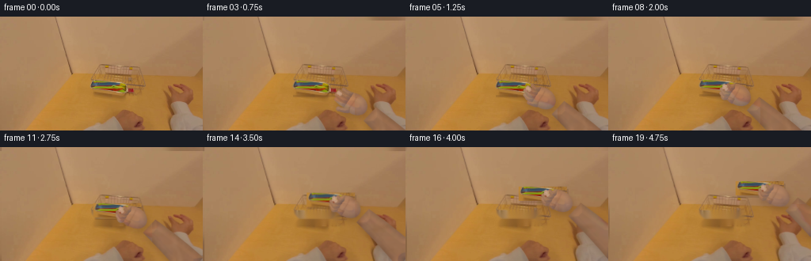
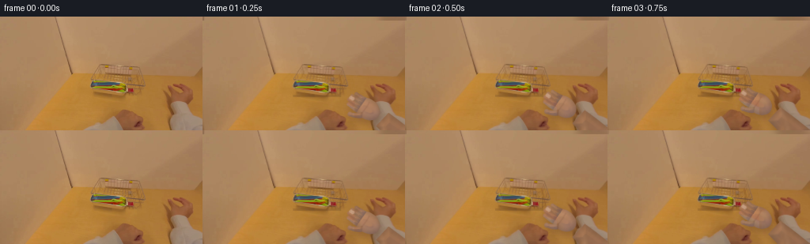
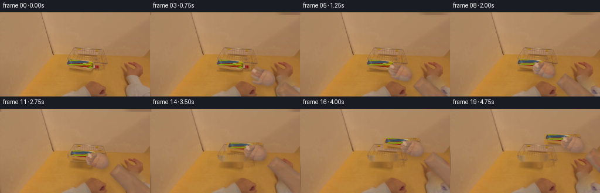
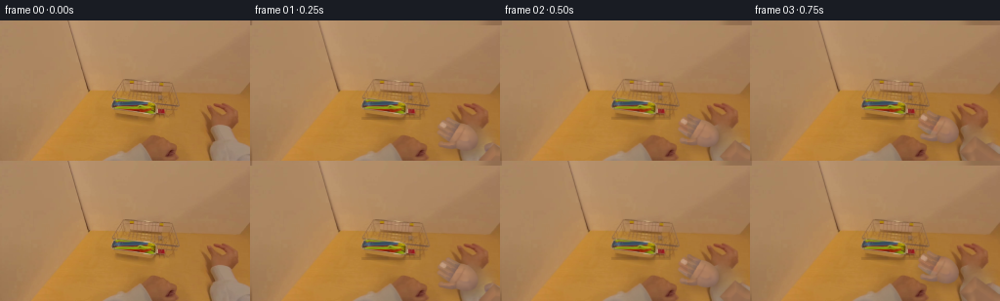

CODING AGENTS AS PIXEL WORLD MODELS
traex/DeepSeek-V4.1-Flash · common50_0016
点击播放 · 原生 RGB 像素
逐轮保存的候选
回放视频、检查图与代码变化。
每份候选均可单独播放。实际图片检查记录在下方工具轨迹中。
候选 01播放与检查图
点击播放 · 原生 RGB 像素


展开代码变化
--- 上一保存版本
+++ 本次保存版本
@@ -0,0 +1,424 @@
+from __future__ import annotations
+
+from pathlib import Path
+
+import cv2
+import imageio.v2 as imageio
+import numpy as np
+from PIL import Image, ImageDraw, ImageFilter
+
+import artifact_io
+
+
+CASE_DIR = Path(__file__).resolve().parent
+WIDTH, HEIGHT, FRAME_COUNT, FPS = 256, 144, 20, 4
+
+
+def smoothstep(edge0: float, edge1: float, value: float) -> float:
+ value = float(np.clip((value - edge0) / (edge1 - edge0), 0.0, 1.0))
+ return value * value * (3.0 - 2.0 * value)
+
+
+def rgba_blend(base: np.ndarray, color: np.ndarray, alpha: np.ndarray) -> np.ndarray:
+ a = np.clip(alpha[..., None], 0.0, 1.0)
+ return np.clip(base.astype(np.float32) * (1.0 - a) + color.astype(np.float32) * a, 0, 255)
+
+
+def build_clean_tray(frame: np.ndarray) -> tuple[np.ndarray, np.ndarray, np.ndarray]:
+ """Separate the colorful utensil bundle and reconstruct the visible tray below it."""
+ rgb = frame.astype(np.int16)
+ r, g, b = rgb[..., 0], rgb[..., 1], rgb[..., 2]
+ yy, xx = np.indices((HEIGHT, WIDTH))
+
+ # The bundle occupies a compact band in the tray. Color thresholds isolate the
+ # blue, yellow-green, red, and green plastic pieces from the warm tabletop.
+ roi = (xx >= 112) & (xx <= 171) & (yy >= 81) & (yy <= 97)
+ blue = (b > r + 8) & (b > 55) & (g > r - 2)
+ yellow = (r > 92) & (g > 91) & (b < 82) & (g - b > 30)
+ red = (r > 102) & (r > g + 35) & (r > b + 42) & (g < 92)
+ green = (g > r - 8) & (g > b + 45) & (g > 80)
+ dark = (np.maximum.reduce([r, g, b]) < 77) & (b > 45)
+ utensil = roi & (blue | yellow | red | green | dark)
+ utensil = cv2.morphologyEx(
+ utensil.astype(np.uint8), cv2.MORPH_CLOSE, np.ones((3, 3), np.uint8)
+ ).astype(bool)
+ utensil = cv2.dilate(
+ utensil.astype(np.uint8), np.ones((2, 2), np.uint8), iterations=1
+ ).astype(bool)
+
+ # Inpainting the small bundle reveals the silver tray. A light blur removes
+ # high-frequency inpainting seams without touching the original first frame.
+ clean = cv2.inpaint(frame, utensil.astype(np.uint8) * 255, 2.2, cv2.INPAINT_TELEA)
+ tray_region = (xx >= 112) & (xx <= 174) & (yy >= 80) & (yy <= 101)
+ clean_blur = cv2.GaussianBlur(clean, (0, 0), 0.75)
+ clean[tray_region] = np.round(
+ 0.76 * clean[tray_region] + 0.24 * clean_blur[tray_region]
+ ).astype(np.uint8)
+
+ # A soft alpha keeps the original utensil silhouettes and their tiny shadows.
+ alpha = cv2.GaussianBlur(utensil.astype(np.float32), (0, 0), 0.42)
+ alpha = np.clip((alpha - 0.16) / 0.84, 0, 1)
+ return clean, utensil, alpha
+
+
+def draw_polygon_mask(points: list[tuple[float, float]], scale: int = 4) -> np.ndarray:
+ mask = Image.new("L", (WIDTH * scale, HEIGHT * scale), 0)
+ draw = ImageDraw.Draw(mask)
+ draw.polygon([(int(x * scale), int(y * scale)) for x, y in points], fill=255)
+ return np.asarray(mask.resize((WIDTH, HEIGHT), Image.Resampling.LANCZOS)).astype(
+ np.float32
+ ) / 255.0
+
+
+def capsule_polygon(
+ start: tuple[float, float],
+ end: tuple[float, float],
+ width_start: float,
+ width_end: float,
+ bend: float = 0.0,
+) -> list[tuple[float, float]]:
+ """Tapered capsule with an optional sideways bend at its midpoint."""
+ x0, y0 = start
+ x1, y1 = end
+ dx, dy = x1 - x0, y1 - y0
+ length = max(np.hypot(dx, dy), 1e-6)
+ ux, uy = dx / length, dy / length
+ vx, vy = -uy, ux
+ xm, ym = (x0 + x1) * 0.5 + vx * bend, (y0 + y1) * 0.5 + vy * bend
+
+ left = []
+ right = []
+ for i in range(9):
+ t = i / 8
+ # Quadratic centerline through the bent midpoint.
+ cx = (1 - t) ** 2 * x0 + 2 * (1 - t) * t * xm + t * t * x1
+ cy = (1 - t) ** 2 * y0 + 2 * (1 - t) * t * ym + t * t * y1
+ half = 0.5 * ((1 - t) * width_start + t * width_end)
+ left.append((cx + vx * half, cy + vy * half))
+ right.append((cx - vx * half, cy - vy * half))
+ return left + right[::-1]
+
+
+def ellipse_polygon(
+ center: tuple[float, float],
+ rx: float,
+ ry: float,
+ angle: float,
+ count: int = 40,
+) -> list[tuple[float, float]]:
+ theta = np.linspace(0, 2 * np.pi, count, endpoint=False)
+ ca, sa = np.cos(angle), np.sin(angle)
+ x = rx * np.cos(theta)
+ y = ry * np.sin(theta)
+ return [
+ (center[0] + ca * px - sa * py, center[1] + sa * px + ca * py)
+ for px, py in zip(x, y)
+ ]
+
+
+def make_skin_texture(source: np.ndarray) -> np.ndarray:
+ """Extract low-amplitude, seamless skin variation from the visible hand."""
+ patch = source[112:140, 221:254].astype(np.float32)
+ patch = cv2.resize(patch, (96, 72), interpolation=cv2.INTER_CUBIC)
+ low = cv2.GaussianBlur(patch, (0, 0), 9)
+ texture = patch - low
+ texture = np.tile(texture, (2, 3, 1))[:HEIGHT, :WIDTH]
+ return np.clip(texture, -8, 8)
+
+
+def shade_skin(
+ mask: np.ndarray,
+ base_color: np.ndarray,
+ light_dx: float,
+ light_dy: float,
+ texture: np.ndarray,
+) -> np.ndarray:
+ """Give each hand part soft cylindrical shading and real-frame skin grain."""
+ alpha = np.clip(mask, 0, 1)
+ dist = cv2.distanceTransform((alpha * 255).astype(np.uint8), cv2.DIST_L2, 5)
+ dist = np.clip(dist / 7.0, 0, 1)
+ gy, gx = np.gradient(cv2.GaussianBlur(alpha, (0, 0), 2.2))
+ normal = np.stack([-gx, -gy], axis=-1)
+ normal /= np.maximum(np.linalg.norm(normal, axis=-1, keepdims=True), 1e-4)
+ directional = np.clip(normal[..., 0] * light_dx + normal[..., 1] * light_dy, -1, 1)
+
+ color = np.empty((HEIGHT, WIDTH, 3), np.float32)
+ color[:] = base_color
+ color *= (0.87 + 0.13 * dist[..., None])
+ color += directional[..., None] * np.array([13, 8, 4], np.float32)
+ color += texture
+ # Slightly cooler reflected light on the shadow side.
+ shadow = np.clip(-directional, 0, 1)[..., None]
+ color += shadow * np.array([-7, -4, 5], np.float32)
+ return np.clip(color, 0, 255)
+
+
+def hand_geometry(
+ wrist: tuple[float, float],
+ palm: tuple[float, float],
+ grip: float,
+ finger_reach: float,
+) -> tuple[np.ndarray, np.ndarray, list[np.ndarray], np.ndarray]:
+ """Return masks for forearm, palm, four fingers, and thumb."""
+ wx, wy = wrist
+ px, py = palm
+ ux, uy = px - wx, py - wy
+ norm = max(np.hypot(ux, uy), 1e-6)
+ ux, uy = ux / norm, uy / norm
+ vx, vy = -uy, ux
+ angle = np.arctan2(uy, ux)
+
+ # The wrist continues out of frame, giving the hand a believable attachment.
+ fore_end = (wx + ux * 5, wy + uy * 5)
+ fore_start = (wx + 52, wy + 50)
+ forearm = draw_polygon_mask(
+ capsule_polygon(fore_start, fore_end, 35, 23, bend=2.0)
+ )
+ palm_mask = draw_polygon_mask(ellipse_polygon((px, py), 17, 13, angle))
+
+ fingers = []
+ offsets = (-8.3, -3.0, 2.4, 7.6)
+ reaches = (0.83, 1.0, 0.96, 0.79)
+ for i, (offset, reach_scale) in enumerate(zip(offsets, reaches)):
+ root = (px + ux * 9 + vx * offset, py + uy * 9 + vy * offset)
+ curl = grip * (7.5 + i * 0.7)
+ reach = finger_reach * reach_scale - grip * (3.8 + 0.55 * i)
+ # Adjacent fingers converge slightly when pinching the utensils.
+ side = -np.sign(offset) * grip * (1.3 if abs(offset) > 5 else 0.5)
+ tip = (
+ root[0] + ux * reach + vx * (side - grip * 2.0),
+ root[1] + uy * reach + vy * (side - grip * 2.0),
+ )
+ mid_bend = -curl * (1 if offset < 0 else 0.8)
+ poly = capsule_polygon(root, tip, 6.4, 4.7, bend=mid_bend)
+ mask = draw_polygon_mask(poly)
+ # Rounded tip.
+ tip_mask = draw_polygon_mask(ellipse_polygon(tip, 2.5, 2.5, angle))
+ fingers.append(np.maximum(mask, tip_mask))
+
+ thumb_root = (px + ux * 1 - vx * 10, py + uy * 1 - vy * 10)
+ thumb_tip = (
+ px + ux * (9 + 5.5 * (1 - grip)) - vx * (18 - 8.0 * grip),
+ py + uy * (9 + 5.5 * (1 - grip)) - vy * (18 - 8.0 * grip),
+ )
+ thumb = draw_polygon_mask(
+ capsule_polygon(thumb_root, thumb_tip, 7.6, 5.0, bend=-2.5 + grip * 2.0)
+ )
+ thumb = np.maximum(
+ thumb,
+ draw_polygon_mask(ellipse_polygon(thumb_tip, 3.0, 3.0, angle - 0.5)),
+ )
+ return forearm, palm_mask, fingers, thumb
+
+
+def render_hand(
+ frame: np.ndarray,
+ wrist: tuple[float, float],
+ palm: tuple[float, float],
+ grip: float,
+ finger_reach: float,
+ texture: np.ndarray,
+) -> tuple[np.ndarray, np.ndarray]:
+ forearm, palm_mask, fingers, thumb = hand_geometry(
+ wrist, palm, grip, finger_reach
+ )
+ all_hand = np.maximum.reduce([forearm, palm_mask, thumb, *fingers])
+
+ # Contact shadow below the forearm and palm, especially near the tray.
+ shadow = cv2.GaussianBlur(all_hand, (0, 0), 4.5)
+ shadow = np.roll(shadow, (5, 2), axis=(0, 1)) * 0.28
+ frame = rgba_blend(frame, np.array([80, 49, 30], np.float32), shadow)
+
+ # Forearm is slightly darker than the palm due to its angle to the light.
+ parts = [
+ (forearm, np.array([151, 109, 79], np.float32)),
+ (palm_mask, np.array([172, 126, 94], np.float32)),
+ (thumb, np.array([168, 121, 90], np.float32)),
+ ]
+ for mask, base in parts:
+ color = shade_skin(mask, base, -0.55, -0.83, texture)
+ frame = rgba_blend(frame, color, mask)
+
+ for i, finger in enumerate(fingers):
+ base = np.array([174, 129, 97], np.float32) - np.array(
+ [3 * i, 2 * i, i], np.float32
+ )
+ color = shade_skin(finger, base, -0.7, -0.72, texture)
+ frame = rgba_blend(frame, color, finger)
+
+ # Fingertip warmth and pale nails make the pinch legible at low resolution.
+ for i, (offset, reach_scale) in enumerate(
+ zip((-8.3, -3.0, 2.4, 7.6), (0.83, 1.0, 0.96, 0.79))
+ ):
+ ux, uy = np.array(palm) - np.array(wrist)
+ norm = max(np.hypot(ux, uy), 1e-6)
+ ux, uy = ux / norm, uy / norm
+ vx, vy = -uy, ux
+ reach = finger_reach * reach_scale - grip * (3.8 + 0.55 * i)
+ tip = (
+ palm[0] + ux * (9 + reach) + vx * (-np.sign(offset) * grip * 1.3),
+ palm[1] + uy * (9 + reach) + vy * (-np.sign(offset) * grip * 1.3),
+ )
+ nail = draw_polygon_mask(
+ ellipse_polygon(tip, 1.8, 2.25, np.arctan2(uy, ux) + 0.12)
+ )
+ nail_color = np.array([205, 166, 139], np.float32)
+ frame = rgba_blend(frame, nail_color, nail * (0.48 + 0.22 * grip))
+
+ # Two subtle knuckle creases and a wrist crease keep the hand from reading flat.
+ ux, uy = np.array(palm) - np.array(wrist)
+ norm = max(np.hypot(ux, uy), 1e-6)
+ ux, uy = ux / norm, uy / norm
+ vx, vy = -uy, ux
+ crease_alpha = np.zeros((HEIGHT, WIDTH), np.float32)
+ crease_alpha = np.maximum(
+ crease_alpha,
+ draw_polygon_mask(
+ capsule_polygon(
+ (palm[0] + ux * 3 - vx * 9, palm[1] + uy * 3 - vy * 9),
+ (palm[0] + ux * 3 + vx * 9, palm[1] + uy * 3 + vy * 9),
+ 1.2,
+ 1.2,
+ bend=1.3,
+ )
+ )
+ * 0.25,
+ )
+ crease_alpha = cv2.GaussianBlur(crease_alpha, (0, 0), 0.55)
+ frame = rgba_blend(frame, np.array([119, 76, 55], np.float32), crease_alpha)
+ return np.clip(frame, 0, 255).astype(np.uint8), all_hand
+
+
+def handheld_warp(frame: np.ndarray, amount: float) -> np.ndarray:
+ """Very small, smooth camera drift; frame zero remains untouched."""
+ if amount <= 1e-6:
+ return frame
+ dx = 0.22 * np.sin(amount * 1.9)
+ dy = 0.13 * np.cos(amount * 1.35)
+ matrix = np.float32([[1, 0, dx], [0, 1, dy]])
+ warped = cv2.warpAffine(
+ frame,
+ matrix,
+ (WIDTH, HEIGHT),
+ flags=cv2.INTER_LINEAR,
+ borderMode=cv2.BORDER_REFLECT_101,
+ )
+ gain = 1.0 + 0.004 * np.sin(amount * 1.15 + 0.4)
+ return np.clip(warped.astype(np.float32) * gain, 0, 255).astype(np.uint8)
+
+
+def generate() -> np.ndarray:
+ source = np.asarray(Image.open(CASE_DIR / "first_frame.png").convert("RGB"))
+ assert source.shape == (HEIGHT, WIDTH, 3)
+ clean, utensil_mask, utensil_alpha = build_clean_tray(source)
+ texture = make_skin_texture(source)
+ frames = [source.copy()]
+
+ # Ease the hand in, pinch, then lift the bundle clear and withdraw.
+ approach = [
+ (0.08, 0.00),
+ (0.18, 0.02),
+ (0.32, 0.07),
+ (0.48, 0.16),
+ (0.66, 0.30),
+ (0.82, 0.52),
+ (0.94, 0.80),
+ (1.00, 1.00),
+ (1.00, 1.00),
+ (1.00, 1.00),
+ ]
+ pickup = [
+ (0.0, 0.0),
+ (0.0, 0.0),
+ (0.0, 0.0),
+ (0.0, 0.0),
+ (0.0, 0.0),
+ (0.0, 0.0),
+ (0.0, 0.0),
+ (0.0, 0.0),
+ (0.5, -1.0),
+ (1.5, -3.0),
+ (3.0, -6.0),
+ (5.5, -10.0),
+ (9.0, -14.5),
+ (13.5, -19.0),
+ (19.0, -23.5),
+ (25.0, -27.5),
+ (31.0, -31.0),
+ (37.0, -34.0),
+ (43.0, -36.5),
+ (49.0, -38.0),
+ ]
+
+ for index in range(1, FRAME_COUNT):
+ if index < 10:
+ t, grasp = approach[index]
+ dx, dy = 0.0, 0.0
+ else:
+ t, grasp = 1.0, 1.0
+ dx, dy = pickup[index]
+
+ base = clean.copy()
+
+ # A gentle pinch settles the utensil bundle into the fingertips before
+ # it begins moving with the hand.
+ settle = max(0.0, (grasp - 0.72) / 0.28) * (1.0 if index < 10 else 0.0)
+ bundle_dx = dx + 0.8 * settle
+ bundle_dy = dy - 0.9 * settle
+ matrix = np.float32([[1, 0, bundle_dx], [0, 1, bundle_dy]])
+ moved = cv2.warpAffine(
+ source,
+ matrix,
+ (WIDTH, HEIGHT),
+ flags=cv2.INTER_LINEAR,
+ borderMode=cv2.BORDER_REFLECT_101,
+ )
+ a = cv2.warpAffine(
+ utensil_alpha,
+ matrix,
+ (WIDTH, HEIGHT),
+ flags=cv2.INTER_LINEAR,
+ borderMode=cv2.BORDER_CONSTANT,
+ borderValue=0,
+ )
+ # A tiny directional shadow travels with the lifted bundle.
+ sprite_shadow = np.roll(a, (3, 2), axis=(0, 1)) * 0.20
+ base = rgba_blend(base, np.array([82, 51, 31], np.float32), sprite_shadow)
+ base = rgba_blend(base, moved.astype(np.float32), a)
+
+ # Palm path: from the existing right-side wrist toward the utensil handles.
+ start_palm = np.array([218.0, 121.0], np.float32)
+ contact_palm = np.array([164.0, 99.0], np.float32)
+ palm = start_palm * (1 - t) + contact_palm * t
+ palm += np.array([dx, dy], np.float32)
+ wrist = palm + np.array([23.0, 16.0], np.float32) - np.array(
+ [0.0, 2.5 * grasp], np.float32
+ )
+ finger_reach = 16.5 + 2.0 * t - 1.7 * grasp
+ frame, _ = render_hand(
+ base, tuple(wrist), tuple(palm), grasp, finger_reach, texture
+ )
+ frame = handheld_warp(frame, float(index))
+ frames.append(frame)
+
+ result = np.stack(frames).astype(np.uint8)
+ assert result.shape == (FRAME_COUNT, HEIGHT, WIDTH, 3)
+ assert np.array_equal(result[0], source)
+ return result
+
+
+def main() -> None:
+ frames = generate()
+ artifact_io.save(frames, CASE_DIR)
+ imageio.mimsave(
+ CASE_DIR / "output.mp4",
+ frames,
+ fps=FPS,
+ codec="libx264",
+ quality=8,
+ macro_block_size=1,
+ )
+
+
+if __name__ == "__main__":
+ main()
候选 02播放与检查图
点击播放 · 原生 RGB 像素


展开代码变化
--- 上一保存版本
+++ 本次保存版本
@@ -124,6 +124,64 @@
texture = patch - low
texture = np.tile(texture, (2, 3, 1))[:HEIGHT, :WIDTH]
return np.clip(texture, -8, 8)
+
+
+def build_clean_scene(source: np.ndarray) -> tuple[np.ndarray, np.ndarray]:
+ """Remove the foreground hand and reconstruct the warm tabletop beneath it."""
+ rgb = source.astype(np.int16)
+ r, g, b = rgb[..., 0], rgb[..., 1], rgb[..., 2]
+ yy, xx = np.indices((HEIGHT, WIDTH))
+
+ # The foreground hand is the only large low-saturation, blue-rich region in
+ # the lower right. Its left edge is a smooth diagonal from the tray to frame bottom.
+ hand_core = (
+ (xx >= 214)
+ & (yy >= 101)
+ & (r > 123)
+ & (g > 86)
+ & (b > 61)
+ & (r - g > 7)
+ & (r - g < 72)
+ & (g - b > -4)
+ & (g - b < 61)
+ )
+ n, labels, stats, _ = cv2.connectedComponentsWithStats(
+ hand_core.astype(np.uint8), 8
+ )
+ label = labels[125, 230]
+ if label == 0:
+ raise RuntimeError("Could not identify the source foreground hand")
+ hand_component = (labels == label).astype(np.uint8)
+ points = np.column_stack(np.where(hand_component > 0))[:, ::-1]
+ hull = cv2.convexHull(points.astype(np.int32))
+ hand_fill = np.zeros((HEIGHT, WIDTH), np.uint8)
+ cv2.fillPoly(hand_fill, [hull], 255)
+ hand_fill = cv2.dilate(hand_fill, np.ones((2, 2), np.uint8), iterations=1)
+
+ # Mirror clean tabletop pixels across the hand's center line. Feather the edge
+ # so the replacement remains part of the same photographed surface.
+ clean = source.copy()
+ alpha = cv2.GaussianBlur(hand_fill.astype(np.float32) / 255.0, (0, 0), 1.25)
+ alpha = np.clip((alpha - 0.16) / 0.84, 0, 1)
+ for y in range(HEIGHT):
+ for x in range(WIDTH):
+ if alpha[y, x] <= 0:
+ continue
+ sx = int(np.clip(420 - x, 0, WIDTH - 1))
+ fill = source[y, sx].astype(np.float32)
+ # Match the mirrored surface's local exposure to its new location.
+ fill *= np.array([1.018, 0.985, 0.89], np.float32)
+ clean[y, x] = np.clip(
+ source[y, x] * (1 - alpha[y, x]) + fill * alpha[y, x], 0, 255
+ ).astype(np.uint8)
+ clean = cv2.seamlessClone(
+ clean,
+ source,
+ (hand_fill > 0).astype(np.uint8) * 255,
+ (235, 122),
+ cv2.NORMAL_CLONE,
+ )
+ return clean, alpha
def shade_skin(
@@ -310,7 +368,8 @@
def generate() -> np.ndarray:
source = np.asarray(Image.open(CASE_DIR / "first_frame.png").convert("RGB"))
assert source.shape == (HEIGHT, WIDTH, 3)
- clean, utensil_mask, utensil_alpha = build_clean_tray(source)
+ tray_clean, utensil_mask, utensil_alpha = build_clean_tray(source)
+ clean, original_hand_alpha = build_clean_scene(tray_clean)
texture = make_skin_texture(source)
frames = [source.copy()]
@@ -386,15 +445,16 @@
base = rgba_blend(base, np.array([82, 51, 31], np.float32), sprite_shadow)
base = rgba_blend(base, moved.astype(np.float32), a)
- # Palm path: from the existing right-side wrist toward the utensil handles.
- start_palm = np.array([218.0, 121.0], np.float32)
+ # Palm path: continue the hand already visible at the lower right toward
+ # the utensil handles.
+ start_palm = np.array([229.0, 124.0], np.float32)
contact_palm = np.array([164.0, 99.0], np.float32)
palm = start_palm * (1 - t) + contact_palm * t
palm += np.array([dx, dy], np.float32)
- wrist = palm + np.array([23.0, 16.0], np.float32) - np.array(
- [0.0, 2.5 * grasp], np.float32
- )
- finger_reach = 16.5 + 2.0 * t - 1.7 * grasp
+ wrist = palm + np.array([29.0, 18.0], np.float32) - np.array(
+ [0.0, 2.0 * grasp], np.float32
+ )
+ finger_reach = 15.5 + 2.5 * t - 1.8 * grasp
frame, _ = render_hand(
base, tuple(wrist), tuple(palm), grasp, finger_reach, texture
)
可观测工具轨迹
实际执行的命令与返回图片。
命令 1exit 0
/bin/bash -c "pwd && rg --files -g '"'!*.pyc'"' -g '"'!__pycache__'"' | sed -n '1,200p'"
命令 2exit 0
/bin/bash -c "sed -n '1,240p' prompt.txt"
命令 3exit 0
/bin/bash -c "sed -n '1,280p' GENERATION_RULES.md"
命令 4exit 0
/bin/bash -c 'ls -lah && file first_frame.png 2>/dev/null || true && ffprobe -v error -show_entries stream=width,height,pix_fmt,duration -of default=nw=1 first_frame.png 2>/dev/null || true'
命令 5exit 0
/bin/bash -c "cat task_spec.json && sed -n '1,260p' artifact_io.py"
命令 6exit 0
/bin/bash -c "python - <<'PY'
from PIL import Image
import numpy as np
im=Image.open('first_frame.png').convert('RGB')
a=np.asarray(im)
print(im.size, a.shape, a.dtype)
print('min/max/mean',a.min((0,1)),a.max((0,1)),a.mean((0,1)))
# coarse 16x9 RGB cell means
h,w=a.shape[:2]
gh,gw=9,16
for gy in range(gh):
row=[]
for gx in range(gw):
c=a[gy*h//gh:(gy+1)*h//gh,gx*w//gw:(gx+1)*w//gw].mean((0,1)).astype(int)
row.append('%02x%02x%02x'%tuple(c))
print('%02d'%gy,' '.join(row))
PY"命令 7exit 0
/bin/bash -c "python - <<'PY'
try:
import cv2; print('cv2',cv2.__version__)
except Exception as e: print('no cv2',e)
try:
import scipy; print('scipy',scipy.__version__)
except Exception as e: print('no scipy',e)
try:
import imageio; print('imageio',imageio.__version__)
except Exception as e: print('no imageio',e)
PY"命令 8exit 0
/bin/bash -c "python - <<'PY'
import cv2, numpy as np
im=cv2.imread('first_frame.png')[:,:,::-1]
hsv=cv2.cvtColor(im,cv2.COLOR_RGB2HSV)
# quantized class chars based hue/sat/val
H,S,V=[hsv[:,:,i].astype(float) for i in range(3)]
# classes
# colorful: high sat, categorize hue; gray bright silver; brown wood; dark
chars=np.full(im.shape[:2],'.',dtype='<U1')
chars[(S<35)&(V>140)]='S'
chars[(S<55)&(V>90)&(V<=140)]='s'
chars[(S<80)&(V<=90)]='d'
# brown/yellow (wood) H around 10-35, sat moderate
wood=(H>=5)&(H<35)&(S>=55)&(V>70)
chars[wood]='w'
# hue colors
for name,mask,ch in [
('red',(((H<8)|(H>170))&(S>90)&(V>80)),'R'),
('orange',((H>=8)&(H<24)&(S>110)&(V>100)),'O'),
('yellow',((H>=24)&(H<40)&(S>90)&(V>100)),'Y'),
('green',((H>=40)&(H<85)&(S>70)&(V>50)),'G'),
('cyan',((H>=85)&(H<105)&(S>60)&(V>50)),'C'),
('blue',((H>=105)&(H<135)&(S>60)&(V>40)),'B'),
('purple',((H>=135)&(H<170)&(S>50)&(V>40)),'P'),
]:
chars[mask]=ch
# downsample 4x4 majority char
for y in range(0,144,4):
line=''
for x in range(0,256,4):
block=chars[y:y+4,x:x+4]
vals,cnt=np.unique(block,return_counts=True)
line+=vals[np.argmax(cnt)]
print(line)
PY"命令 9exit 0
/bin/bash -c "python - <<'PY'
from PIL import Image
import numpy as np, cv2
im=np.asarray(Image.open('first_frame.png').convert('RGB'))
g=cv2.cvtColor(im,cv2.COLOR_RGB2GRAY)
# ascii brightness avg blocks 4x4
chars=' .:-=+*#%@'
for y in range(0,144,4):
line=''
for x in range(0,256,4):
v=g[y:y+4,x:x+4].mean()
line+=chars[min(9,int(v/256*10))]
print(line)
print('exact sample grid every 16 px')
for y in range(8,144,16):
print(y, ['%02x%02x%02x'%tuple(im[y,x]) for x in range(8,256,16)])
PY"命令 10exit 0
/bin/bash -c "python - <<'PY'
from PIL import Image
import numpy as np
im=np.asarray(Image.open('first_frame.png').convert('RGB'))
# print 16x16 cell mean, plus saturation and HSV hue means
import cv2
hsv=cv2.cvtColor(im,cv2.COLOR_RGB2HSV)
for gy in range(9):
print('ROW',gy)
print(' '.join('%02d,%02d'%(int(hsv[(gy*16+8),min(255,gx*16+8),0]),int(hsv[(gy*16+8),min(255,gx*16+8),1])) for gx in range(16)))
PY"命令 11exit 0
/bin/bash -c "python - <<'PY'
from PIL import Image
import numpy as np
im=np.asarray(Image.open('first_frame.png').convert('RGB'))
# produce an enlarged nearest image for terminal-independent local inspection? no visual tool. print edges and patch stats
# list RGB means in 8x8 blocks at key area x 50..210, y 70..143
for y in range(72,144,8):
print('y',y)
for x in range(48,216,8):
c=im[y:y+8,x:x+8].mean((0,1)).astype(int)
print('%02x%02x%02x'%tuple(c),end=' ')
print()
PY"命令 12exit 0
/bin/bash -c "python - <<'PY'
from PIL import Image
import numpy as np
im=np.asarray(Image.open('first_frame.png').convert('RGB'))
# color anomalies / high saturation segmentation around center lower. Print bounding components after high chroma criterion in y>65
rgb=im.astype(float)
mx=rgb.max(2); mn=rgb.min(2); chrom=mx-mn
# colorful plastics high chrom and non-brown? print components of chrom>60 and B/G relations
import cv2
for thr in (55,70,85,100,120):
mask=((chrom>thr)&(np.indices(chrom.shape)[0]>65)).astype('uint8')
n,l,stats,cents=cv2.connectedComponentsWithStats(mask,8)
comps=sorted([(int(s[4]),tuple(map(int,s[:4])),tuple(np.round(c,1))) for s,c in zip(stats[1:],cents[1:])],reverse=True)[:20]
print('thr',thr,'n',n-1,comps)
PY"命令 13exit 0
/bin/bash -c "python - <<'PY'
import numpy as np, cv2
from PIL import Image
im=np.asarray(Image.open('first_frame.png').convert('RGB'))
X=im.reshape(-1,3).astype(np.float32)
crit=(cv2.TERM_CRITERIA_EPS+cv2.TERM_CRITERIA_MAX_ITER,100,0.2)
for k in (8,12,16,24):
_,lab,cent=cv2.kmeans(X,k,None,crit,10,cv2.KMEANS_PP_CENTERS)
counts=np.bincount(lab.ravel())
order=np.argsort(counts)[::-1]
print('\\nk',k)
for j in order:
print(counts[j],np.round(cent[j]).astype(int), 'bbox?', end=' ')
m=(lab.reshape(144,256)==j)
ys,xs=np.where(m)
print((xs.min(),ys.min(),xs.max(),ys.max()))
PY"命令 14exit 0
/bin/bash -c "python - <<'PY'
import numpy as np
from PIL import Image
im=np.asarray(Image.open('first_frame.png').convert('RGB')).astype(int)
# print rows as blocks of 4x4 with mean RGB codes x from 104 to 184 y 60 to 100
for y in range(60,100,4):
print('Y%03d'%y,end=' ')
for x in range(104,188,4):
c=im[y:y+4,x:x+4].mean((0,1)).astype(int)
print('%02x%02x%02x'%tuple(c),end=' ')
print()
PY"命令 15exit 1
/bin/bash -c "python - <<'PY'
import cv2, numpy as np
from PIL import Image
im=np.asarray(Image.open('first_frame.png').convert('RGB'))
g=cv2.cvtColor(im,cv2.COLOR_RGB2GRAY)
g=cv2.GaussianBlur(g,(3,3),0)
e=cv2.Canny(g,35,90)
# ascii edge density 4x4
for y in range(0,144,4):
line=''
for x in range(0,256,4):
d=e[y:y+4,x:x+4].mean()
line += ' #'[d>20] if d<30 else '@'
print(line)
# line stats via Hough
lines=cv2.HoughLinesP(e,1,np.pi/180,threshold=18,minLineLength=18,maxLineGap=4)
print('lines', None if lines is None else len(lines))
if lines is not None:
arr=[]
for l in lines[:,0]:
x1,y1,x2,y2=map(int,l); length=((x2-x1)**2+(y2-y1)**2)**.5; ang=np.degrees(np.arctan2(y2-y1,x2-x1))
arr.append((round(length,1),round(ang,1),(x1,y1,x2,y2)))
for z in sorted(arr,reverse=True)[:80]: print(z)
PY"命令 16exit 0
/bin/bash -c "python - <<'PY'
import cv2, numpy as np
from PIL import Image
im=np.asarray(Image.open('first_frame.png').convert('RGB'))
g=cv2.cvtColor(im,cv2.COLOR_RGB2GRAY)
g=cv2.GaussianBlur(g,(3,3),0)
e=cv2.Canny(g,35,90)
for y in range(0,144,4):
line=''
for x in range(0,256,4):
d=e[y:y+4,x:x+4].mean()
line += '#' if d>12 else ('.' if d>3 else ' ')
print(line)
lines=cv2.HoughLinesP(e,1,np.pi/180,threshold=18,minLineLength=18,maxLineGap=4)
print('lines', None if lines is None else len(lines))
if lines is not None:
arr=[]
for l in lines[:,0]:
x1,y1,x2,y2=map(int,l); length=((x2-x1)**2+(y2-y1)**2)**.5; ang=np.degrees(np.arctan2(y2-y1,x2-x1))
arr.append((round(length,1),round(ang,1),(x1,y1,x2,y2)))
for z in sorted(arr,reverse=True)[:80]: print(z)
PY"命令 17exit 0
/bin/bash -c "python - <<'PY'
import cv2, numpy as np
from PIL import Image
im=np.asarray(Image.open('first_frame.png').convert('RGB'))
hsv=cv2.cvtColor(im,cv2.COLOR_RGB2HSV); H,S,V=[hsv[:,:,i] for i in range(3)]
r,g,b=[im[:,:,i].astype(int) for i in range(3)]
C={}
C['Y']=(r>105)&(g>100)&(b<85)&((r-g)<50)&((g-b)>45)
C['R']=(r>85)&(r>g*1.35)&(r>b*1.8)&(g<95)
C['B']=(b>55)&(g>55)&(r<105)&(b>r*1.03)
C['S']=(S<52)&(V>85)
C['D']=(V<65)
C['w']=((H<35)&(S>=45)&(V>=60))
C['.']=np.ones_like(H,dtype=bool)
# priority colorful > silver/dark > wood
labels=np.full(H.shape,'.',dtype='<U1')
labels[C['w']]='w'
labels[C['S']]='S'; labels[C['D']]='D'
labels[C['B']]='B'; labels[C['R']]='R'; labels[C['Y']]='Y'
for y in range(0,144,2):
line=''
for x in range(0,256,2):
block=labels[y:y+2,x:x+2]
u,c=np.unique(block,return_counts=True)
line+=u[np.argmax(c)]
print('%03d '%y+line)
PY"命令 18exit 0
/bin/bash -c "python - <<'PY'
from PIL import Image
import numpy as np
im=np.asarray(Image.open('first_frame.png').convert('RGB')).astype(int)
# for each x 100..180, print y where strongest non-wood hue/saturation evidence
for x in range(100,182,2):
vals=[]
for y in range(55,144):
r,g,b=im[y,x]
# color score
if b>r+8 and g>r+2: c='B'
elif r>g+22 and r>b+35: c='R'
elif r>105 and g>95 and b<95 and g-b>35: c='Y'
elif max(r,g,b)-min(r,g,b)<40 and max(r,g,b)>85: c='S'
elif max(r,g,b)<70: c='D'
else: c='.'
vals.append(c)
# run segments
runs=[]; st=0
for i in range(1,len(vals)+1):
if i==len(vals) or vals[i]"'!=vals[st]:
if vals[st]!='"'.': runs.append(f'{vals[st]}{55+st}-{54+i}')
st=i
print(x,' '.join(runs))
PY"命令 19exit 0
/bin/bash -c "python - <<'PY'
from PIL import Image
import numpy as np, cv2
im=np.asarray(Image.open('first_frame.png').convert('RGB'))
hsv=cv2.cvtColor(im,cv2.COLOR_RGB2HSV)
H,S,V=[hsv[:,:,i].astype(int) for i in range(3)]
# crop x 100:205 y55:144, 1 x 2
for y in range(55,144,2):
line=''
for x in range(100,205):
h,s,v=H[y,x],S[y,x],V[y,x]
# classify
if s<38 and v>110: c='s'
elif s<65 and v<100: c='d'
elif h<8 or h>=170: c='R' if s>110 else 'r'
elif h<21: c='O' if s>115 else 'o'
elif h<38: c='Y' if s>100 else 'y'
elif h<90: c='G' if s>80 else 'g'
elif h<130: c='B' if s>70 else 'b'
else: c='P' if s>60 else 'p'
if s<40: c='.' if v>130 else ('-' if v>90 else 'D')
line+=c
print('%03d %s'%(y,line))
print(' '+''.join(str((x//10)%10) for x in range(100,205)))
print(' '+''.join(str(x%10) for x in range(100,205)))
PY"命令 20exit 0
/bin/bash -c 'command -v chafa || true; command -v viu || true; command -v img2txt || true; command -v jp2 || true; command -v kitty || true'
命令 21exit 0
/bin/bash -c "python - <<'PY'
from PIL import Image
import numpy as np
im=np.asarray(Image.open('first_frame.png').convert('RGB')).astype(int)
# print full RGB around important crop as terminal ANSI truecolor half blocks
# no visible image tools; ANSI is numeric RGB terminal rendering. crop center x90-210 y60-144, maybe width 120 cols too wide, sample 2x
x0,x1,y0,y1=80,216,56,144
a=im[y0:y1,x0:x1]
# resize 2x nearest
a=a[::2,::2]
for y in range(0,a.shape[0]-1,2):
s=''
for x in range(a.shape[1]):
r1,g1,b1=a[y,x]; r2,g2,b2=a[y+1,x]
s+=f'\\x1b[38;2;{r1};{g1};{b1}m\\x1b[48;2;{r2};{g2};{b2}mâ'
print(s+'\\x1b[0m')
PY"命令 22exit 0
/bin/bash -c "python - <<'PY'
from PIL import Image
import numpy as np
im=np.asarray(Image.open('first_frame.png').convert('RGB'))
# downscale 128x72 then nearest to 256x144, saves visual references for us? only pixels
Image.fromarray(im).resize((1024,576),Image.Resampling.NEAREST).save('.tmp/first_frame_4x.png')
# compute tray candidate edges / rows. At each y, detect x where low saturation bright metal
import cv2
hsv=cv2.cvtColor(im,cv2.COLOR_RGB2HSV)
for y in range(76,102,2):
line=''
for x in range(90,205,1):
h,s,v=hsv[y,x]
if s<50 and v>80: c='S'
elif v<70: c='D'
elif s<70: c='s'
else:c='.'
line+=c
print('%03d %s'%(y,line))
PY"命令 23exit 0
/bin/bash -c "python - <<'PY'
from PIL import Image
import numpy as np, cv2
im=np.asarray(Image.open('first_frame.png').convert('RGB'))
g=cv2.cvtColor(im,cv2.COLOR_RGB2GRAY)
# unsharp contrast ascii crop 2x2, x90:220 y65:144
chars=' .,:;irsXA253hMHGS#9B&@'
x0,x1,y0,y1=88,220,64,144
crop=g[y0:y1,x0:x1]
crop=cv2.resize(crop,None,fx=.5,fy=.5,interpolation=cv2.INTER_AREA)
lo,hi=np.percentile(crop,[2,98]); c=np.clip((crop-lo)/(hi-lo),0,1)
for y in range(c.shape[0]):
print('%03d '%(y0+2*y)+''.join(chars[min(len(chars)-1,int(v*(len(chars)-1)))] for v in c[y]))
print(' '+''.join(str(((x0+2*x)//10)%10) for x in range(c.shape[1])))
print(' '+''.join(str((x0+2*x)%10) for x in range(c.shape[1])))
PY"命令 24exit 0
/bin/bash -c "python - <<'PY'
from PIL import Image
import numpy as np, cv2
im=np.asarray(Image.open('first_frame.png').convert('RGB'))
g=cv2.cvtColor(im,cv2.COLOR_RGB2GRAY)
# difference from smooth wood baseline. Fit plane / local polynomial on border? Create high-pass residual
blur=cv2.GaussianBlur(g,(0,0),9)
res=g.astype(float)-blur
# rgb hue-like printed top center 110:180 x70:105
chars=' .:-=+*#%@'
for y in range(70,106,1):
line=''
for x in range(105,190,1):
v=res[y,x]
if v>12: c='@'
elif v>6:c='#'
elif v>2:c='+'
elif v<-10:c='o'
elif v<-5:c='-'
else:c='.'
line+=c
print('%03d %s'%(y,line))
print(' '+''.join(str((x//10)%10) for x in range(105,190)))
print(' '+''.join(str(x%10) for x in range(105,190)))
PY"命令 25exit 0
/bin/bash -c "python - <<'PY'
from PIL import Image
import numpy as np, cv2
im=np.asarray(Image.open('first_frame.png').convert('RGB'))
g=cv2.cvtColor(im,cv2.COLOR_RGB2GRAY)
# perspective-ish crop tray x103:172 y73:110, print 4x4 avg grayscale values (hex)
for y in range(72,112,2):
print('%03d'%y, ' '.join('%02x'%int(g[y:y+2,x:x+2].mean()) for x in range(104,174,2)))
print(' '+' '.join('%02d'%x for x in range(104,174,2)))
PY"命令 26exit 0
/bin/bash -c "python - <<'PY'
from PIL import Image
import numpy as np
im=np.asarray(Image.open('first_frame.png').convert('RGB')).astype(int)
# print avg RGB 2x2 at 4px x 1px y around utensil to infer edges
for y in range(78,104,1):
print('%03d'%y,end=' ')
for x in range(110,174,4):
c=im[y:y+1,x:x+4].mean((0,1)).astype(int)
print('%02x%02x%02x'%tuple(c),end=' ')
print()
print(' '+' '.join('%6d'%x for x in range(110,174,4)))
PY"命令 27exit 0
/bin/bash -c "python - <<'PY'
import numpy as np
from PIL import Image
im=np.asarray(Image.open('first_frame.png').convert('RGB')).astype(int)
# output compact pixel value map as characters based on nearest known palettes for x105:180 y72:108
# classes: wood light W, wood mid w, dark tray D, silver S, blue B, yellow Y, red R, green G, skin? none
for y in range(72,109):
line=''
for x in range(105,181):
r,g,b=im[y,x]
mx=max(r,g,b); mn=min(r,g,b); c=mx-mn
if mx<80: ch='D'
elif c<30: ch='S' if mx>100 else 's'
elif b>r+12 and b>g-5: ch='B'
elif r>g+40 and g<100: ch='R'
elif g>r+5 and g>b+20: ch='G'
elif r>120 and g>90 and b<80: ch='Y'
elif g<80 and b<50: ch='r'
elif r>120 and g<100: ch='o'
elif mx>140: ch='W'
else: ch='w'
line+=ch
print('%03d %s'%(y,line))
print(' '+''.join(str((x//10)%10) for x in range(105,181)))
print(' '+''.join(str(x%10) for x in range(105,181)))
PY"命令 28exit 0
/bin/bash -c "python - <<'PY'
from PIL import Image
import numpy as np
im=np.asarray(Image.open('first_frame.png').convert('RGB')).astype(int)
# per y, bounding positions of blue pixels
for y in range(80,95):
xs=[]
for x in range(100,190):
r,g,b=im[y,x]
if b>r+10 and b>g-10 and b>60: xs.append(x)
if xs: print(y,min(xs),max(xs),len(xs))
# exact table of pixels x115:165 y82:90 as RGB triplets maybe only classify hue by compact color ids
# show runs of quantized nearest base colors
from sklearn.cluster import KMeans
# no
PY"命令 29exit 0
/bin/bash -c "python - <<'PY'
import cv2, numpy as np
from PIL import Image
im=np.asarray(Image.open('first_frame.png').convert('RGB'))
# save enlarged nearest and bilinear crops, perhaps use OCR? no visual. print edges in crop with coordinates
# Use cv2 contours of dark/silver object: region 105:175 78:110. Build mask for \"not wood\" via color distance to row-wise wood medians
# For each row, fit smooth background using bilateral? compare saturation/chroma or dark.
g=cv2.cvtColor(im,cv2.COLOR_RGB2GRAY)
# color distance to local expected brown: expected channels r~1.35g, g~1.4b. non-brown score
r,gc,b=im[:,:,0].astype(float),im[:,:,1].astype(float),im[:,:,2].astype(float)
brown=abs(r-1.35*gc)+abs(gc-1.4*b)
score=255-g # dark score
mask=((brown>55)&(score>20)).astype('uint8')
mask[:75]=0;mask[110:]=0;mask[:,:100]=0;mask[:,180:]=0
# morphology
mask=cv2.morphologyEx(mask,cv2.MORPH_CLOSE,np.ones((3,3),np.uint8))
n,l,stats,cents=cv2.connectedComponentsWithStats(mask,8)
print(sorted([(int(s[4]),tuple(map(int,s[:4])),tuple(np.round(c,1))) for s,c in zip(stats[1:],cents[1:])],reverse=True)[:30])
PY"命令 30exit 0
/bin/bash -c "python - <<'PY'
from PIL import Image
import numpy as np, cv2
im=np.asarray(Image.open('first_frame.png').convert('RGB'))
# Hough lines on crop region around tray, use color gradient
crop=im[75:110,100:180]
g=cv2.cvtColor(crop,cv2.COLOR_RGB2GRAY)
# edge
for th in [(20,50),(30,80),(50,120)]:
e=cv2.Canny(cv2.GaussianBlur(g,(3,3),0),*th)
lines=cv2.HoughLinesP(e,1,np.pi/180,threshold=10,minLineLength=10,maxLineGap=2)
print('th',th)
if lines is not None:
for l in sorted(lines[:,0].tolist(), key=lambda q:-((q[2]-q[0])**2+(q[3]-q[1])**2))[:40]:
x1,y1,x2,y2=l; print((x1+100,y1+75,x2+100,y2+75), round(np.degrees(np.arctan2(y2-y1,x2-x1)),1))
PY"命令 31exit 0
/bin/bash -c "python - <<'PY'
from PIL import Image
import numpy as np
im=np.asarray(Image.open('first_frame.png').convert('RGB'))
# detect colorful pixels in crop and dump exact RGB per pixel for x115:165 y80:100 if chroma > 40
for y in range(80,101):
runs=[]; on=False
for x in range(105,181):
r,g,b=im[y,x].astype(int); c=int(max(r,g,b)-min(r,g,b))
hit=(c>45)
if hit and not on: st=x; on=True
if on and (not hit or x==180):
en=x if not hit else x+1
runs.append((st,en))
on=False
if runs: print(y,runs)
PY"命令 32exit 0
/bin/bash -c "python - <<'PY'
from PIL import Image
import numpy as np
im=np.asarray(Image.open('first_frame.png').convert('RGB')).astype(int)
# dump representative patch x112:160 y82:96 as letter based on nearest colors manually
palette={'K':(50,55,65),'B':(70,100,140),'b':(100,110,100),'R':(150,45,20),'O':(180,80,30),'Y':(150,150,20),'G':(90,140,20),'S':(150,135,110),'w':(175,135,80),'W':(190,145,100)}
for y in range(82,97):
line=''
for x in range(112,165):
p=im[y,x]; ds={k:sum((p[i]-q[i])**2 for i in range(3)) for k,q in palette.items()}; line+=min(ds,key=ds.get)
print('%03d %s'%(y,line))
print(' '+''.join(str((x//10)%10) for x in range(112,165)))
print(' '+''.join(str(x%10) for x in range(112,165)))
PY"命令 33exit 0
/bin/bash -c "python - <<'PY'
from PIL import Image
import numpy as np
im=np.asarray(Image.open('first_frame.png').convert('RGB')).astype(int)
# average colors of obvious regions and candidate layers
for name,sl in {
'wood_top':(slice(0,50),slice(0,256)),
'wood_bottom':(slice(110,144),slice(0,100)),
'tray_dark':(slice(83,90),slice(120,140)),
'tray_bright':(slice(89,91),slice(120,150)),
'blue':(slice(84,86),slice(120,145)),
'yellow':(slice(88,90),slice(120,155)),
'red':(slice(91,94),slice(135,160)),
'green':(slice(88,90),slice(138,160)),
'skin_right':(slice(110,135),slice(205,250)),
}.items():
a=im[sl];print(name, np.round(a.mean((0,1))).astype(int), 'std',np.round(a.std((0,1))).astype(int))
PY"命令 34exit 0
/bin/bash -c "python - <<'PY'
import cv2, numpy as np
from PIL import Image
im=np.asarray(Image.open('first_frame.png').convert('RGB'))
g=cv2.cvtColor(im,cv2.COLOR_RGB2GRAY)
# print high contrast horizontal gradient in crop
sx=cv2.Sobel(g,cv2.CV_32F,1,0,ksize=3); sy=cv2.Sobel(g,cv2.CV_32F,0,1,ksize=3)
for y in range(78,104,2):
line=''
for x in range(105,181):
vx=sx[y,x];vy=sy[y,x]
if abs(vx)>70 or abs(vy)>70:
if abs(vx)>abs(vy): c='>' if vx>0 else '<'
else:c='v' if vy>0 else '"'^'"'
elif abs(vx)>30 or abs(vy)>30:c='+'
else:c='.'
line+=c
print('%03d %s'%(y,line))
print(' '+''.join(str((x//10)%10) for x in range(105,181)))
print(' '+''.join(str(x%10) for x in range(105,181)))
PY"命令 35exit 0
/bin/bash -c "python - <<'PY'
from PIL import Image
import numpy as np
im=np.asarray(Image.open('first_frame.png').convert('RGB')).astype(int)
# print chroma signs at x110:175 y80:100 with palette H,S,V compact and line coordinates
import cv2
hsv=cv2.cvtColor(im.astype('uint8'),cv2.COLOR_RGB2HSV)
for y in range(80,101):
line=''
for x in range(110,176):
h,s,v=hsv[y,x]
if s<35: c='.' if v>110 else '-'
elif h<8 or h>170:c='R'
elif h<22:c='O'
elif h<42:c='Y'
elif h<90:c='G'
elif h<130:c='B'
else:c='P'
line+=c
print('%03d %s'%(y,line))
print(' '+''.join(str((x//10)%10) for x in range(110,176)))
print(' '+''.join(str(x%10) for x in range(110,176)))
PY"命令 36exit 0
/bin/bash -c "python - <<'PY'
from PIL import Image
import numpy as np
im=np.asarray(Image.open('first_frame.png').convert('RGB')).astype(int)
# Inspect actual image file metadata and maybe image is malformed? print coordinates of dark blue etc
# Dump crop as SVG? no. Print grayscale high-res around tray and detect ellipse via ellipse fitting contour
import cv2
crop=im[75:112,100:182]
# edge map
g=cv2.cvtColor(crop.astype('uint8'),cv2.COLOR_RGB2GRAY)
e=cv2.Canny(cv2.GaussianBlur(g,(3,3),0),20,50)
cnts,_=cv2.findContours(e,cv2.RETR_LIST,cv2.CHAIN_APPROX_SIMPLE)
for c in sorted(cnts,key=cv2.contourArea,reverse=True)[:20]:
area=cv2.contourArea(c); per=cv2.arcLength(c,True); approx=cv2.approxPolyDP(c,0.02*per,True)
print('area',area,'bbox',cv2.boundingRect(c),'pts',len(c),'approx',[(int(p[0][0]+100),int(p[0][1]+75)) for p in approx])
PY"命令 37exit 0
/bin/bash -c "ffmpeg -version | sed -n '1,3p'"
命令 38exit 0
/bin/bash -c "python - <<'PY'
from PIL import Image
import numpy as np, cv2
im=np.asarray(Image.open('first_frame.png').convert('RGB'))
hsv=cv2.cvtColor(im,cv2.COLOR_RGB2HSV)
# ascii right region 190:256 y70:144, 2x2 cells, color classes and brightness
for y in range(70,144,2):
line=''
for x in range(190,256,2):
h,s,v=hsv[y:y+2,x:x+2].mean((0,1))
if s<40: c='.' if v>120 else ('-' if v>80 else 'D')
elif h<8 or h>170:c='R'
elif h<22:c='O'
elif h<42:c='Y'
elif h<90:c='G'
elif h<130:c='B'
else:c='P'
line+=c
print('%03d %s'%(y,line))
print(' '+''.join(str(((x)//10)%10) for x in range(190,256,2)))
print(' '+''.join(str((x)%10) for x in range(190,256,2)))
# brightness ascii
g=cv2.cvtColor(im,cv2.COLOR_RGB2GRAY); chars=' .:-=+*#%@'
for y in range(70,144,2):
print('%03d '%y+''.join(chars[min(9,int(g[y:y+2,x:x+2].mean()/256*10))] for x in range(190,256,2)))
PY"命令 39exit 0
/bin/bash -c "python - <<'PY'
from PIL import Image
import numpy as np, cv2
im=np.asarray(Image.open('first_frame.png').convert('RGB'))
hsv=cv2.cvtColor(im,cv2.COLOR_RGB2HSV)
# print saturation x190:256 y80:144
for y in range(80,144,2):
print('%03d '%y+''.join(' .:-=+*#%@'[min(9,int(hsv[y:y+2,x:x+2,1].mean()/256*10))] for x in range(190,256,2)))
PY"命令 40exit 0
/bin/bash -c "python - <<'PY'
from PIL import Image
import numpy as np
im=np.asarray(Image.open('first_frame.png').convert('RGB'))
# RGB means and sample for region right low
for box in [(190,80,256,108),(190,108,256,144),(215,108,240,140),(230,120,256,144),(180,100,220,140),(210,80,256,108)]:
x0,y0,x1,y1=box; a=im[y0:y1,x0:x1]; print(box,np.round(a.mean((0,1))).astype(int),np.round(a.reshape(-1,3).std(0)).astype(int))
# pixel values in right region y110 row
for y in [85,90,95,100,105,110,115,120,125,130,135,140]:
print(y,[('%d'%x, tuple(im[y,x])) for x in range(190,256,10)])
PY"命令 41exit 0
/bin/bash -c "python - <<'PY'
from PIL import Image
import numpy as np
im=np.asarray(Image.open('first_frame.png').convert('RGB')).astype(float)
# Compute colorfulness using opponent; report bbox of skin-ish pixels (r>g>b, low contrast, bright)
r,g,b=im[:,:,0],im[:,:,1],im[:,:,2]
skin=(r>125)&(r<190)&(g>85)&(g<155)&(b>65)&(b<130)&(r-g>12)&(r-g<50)&(g-b>5)&(g-b<45)
# components
import cv2
n,l,stats,cents=cv2.connectedComponentsWithStats(skin.astype('uint8'),8)
for s,c in sorted(zip(stats[1:],cents[1:]),key=lambda z:-z[0][4])[:30]:print(tuple(s),tuple(np.round(c,1)))
PY"命令 42exit 0
/bin/bash -c "python - <<'PY'
from PIL import Image
import numpy as np, cv2
im=np.asarray(Image.open('first_frame.png').convert('RGB'))
hsv=cv2.cvtColor(im,cv2.COLOR_RGB2HSV)
H,S,V=[hsv[:,:,i] for i in range(3)]
# skin candidates based on low saturation and warm hue plus connected component from seed around 230,125
r,g,b=[im[:,:,i].astype(int) for i in range(3)]
skin=((r>120)&(g>85)&(b>60)&(r-g>10)&(r-g<65)&(g-b>0)&(g-b<55)&(S<130))
# connected around seed component from earlier bbox 215,107
n,l,stats,cents=cv2.connectedComponentsWithStats(skin.astype('uint8'),8)
lab=l[125,230]
m=(l==lab)
print('label',lab,'stats',stats[lab])
for y in range(95,144,2):
line=''
for x in range(195,256,2):
blk=m[y:y+2,x:x+2]
line += '#' if blk.mean()>.6 else ('+' if blk.mean()>.2 else ('.' if V[y:y+2,x:x+2].mean()>120 else ' '))
print('%03d %s'%(y,line))
print(' '+''.join(str((x//10)%10) for x in range(195,256,2)))
print(' '+''.join(str(x%10) for x in range(195,256,2)))
PY"命令 43exit 0
/bin/bash -c "python - <<'PY'
from PIL import Image
import numpy as np, cv2
im=np.asarray(Image.open('first_frame.png').convert('RGB'))
# print color info for hand-like component bbox 215:256 y107:144, ascii skin mask against surrounding
for y in range(104,144,2):
line=''
for x in range(210,256,2):
r,g,b=im[y:y+2,x:x+2].mean((0,1)).astype(int)
if r>130 and g>90 and b>65 and r-g>10 and g-b>2 and (r-g)<60: c='#'
elif r>110 and g>70: c='+'
else:c='.'
line+=c
print('%03d %s'%(y,line))
PY"命令 44exit 0
/bin/bash -c "python - <<'PY'
from PIL import Image
import numpy as np
im=np.asarray(Image.open('first_frame.png').convert('RGB')).astype(int)
# infer actual hand region right via color model, save mask overlay for local? numeric stats per x/y
# compare right vs left mirrored-ish, likely hand is low right. Print skin chroma map using a* opponent
for y in range(96,144,4):
line=''
for x in range(190,256,2):
a=im[y:y+4,x:x+2]
r,g,b=a[:,:,0].mean(),a[:,:,1].mean(),a[:,:,2].mean()
# a-lab-ish red-green, b yellow-blue
lab=cv2.cvtColor(a.astype('uint8'),cv2.COLOR_RGB2LAB).mean((0,1)) if False else None
ch=(r-g)
line+= '@' if ch>35 else ('#' if ch>25 else ('+' if ch>17 else ('.' if ch>10 else ' ')))
print('%03d %s'%(y,line))
print(' '+''.join(str((x//10)%10) for x in range(190,256,2)))
print(' '+''.join(str(x%10) for x in range(190,256,2)))
PY"命令 45exit 0
/bin/bash -c "python - <<'PY'
from PIL import Image
import numpy as np
im=np.asarray(Image.open('first_frame.png').convert('RGB')).astype(int)
# print 16-color clusters of right lower using cv2 kmeans and bboxes, restrict y95:144
import cv2
for box in [(190,95,256,144),(100,75,190,110),(0,0,256,144)]:
x0,y0,x1,y1=box;a=im[y0:y1,x0:x1].reshape(-1,3).astype(np.float32)
_,lab,cent=cv2.kmeans(a,10,None,(cv2.TERM_CRITERIA_EPS+cv2.TERM_CRITERIA_MAX_ITER,100,.2),10,cv2.KMEANS_PP_CENTERS)
cnt=np.bincount(lab.ravel())
print('box',box)
for j in np.argsort(cnt)[::-1]:print(cnt[j],np.round(cent[j]).astype(int))
PY"命令 46exit 0
/bin/bash -c "python - <<'PY'
from PIL import Image
import numpy as np
im=np.asarray(Image.open('first_frame.png').convert('RGB')).astype(int)
# print row/column brightness to map tray edges
# For each x, avg gray in y75:108; for each y avg x105:180
import cv2
g=cv2.cvtColor(im.astype('uint8'),cv2.COLOR_RGB2GRAY)
print('x cols')
for x in range(95,190,2):print(x,int(g[75:110,x].mean()),int(g[80:100,x].mean()),end='; ')
print('\\nrows')
for y in range(70,112):print(y,int(g[y,105:180].mean()),end='; ')
PY"命令 47exit 0
/bin/bash -c "python - <<'PY'
from PIL import Image
import numpy as np, cv2
im=np.asarray(Image.open('first_frame.png').convert('RGB'))
# render crop with ansi using fewer colors and smaller width maybe direct output visible in UI? use 64x? Try sixel? no.
# convert to colored Unicode with 4x4 blocks, 32x18 cells, terminal colors
x0,x1,y0,y1=100,196,74,110
a=im[y0:y1,x0:x1]
# quantize each 3x2 cell to ansi 256 palette, print half blocks using 2 vertical cells
for y in range(0,a.shape[0]-1,2):
s=''
for x in range(0,a.shape[1],2):
p=a[y,x].astype(int); q=a[y+1,x].astype(int)
# ansi fg 24bit, bg 24bit
s+=f'\\033[38;2;{p[0]};{p[1]};{p[2]}m\\033[48;2;{q[0]};{q[1]};{q[2]}m '
print(s+'\\033[0m')
PY"命令 48exit 0
/bin/bash -c "python - <<'PY'
from PIL import Image
import numpy as np
im=np.asarray(Image.open('first_frame.png').convert('RGB')).astype(int)
# Print exact first_frame rows at x104:180 y74:100, represent each pixel by max 4 RGB decimal digits? use category.
# identify silver with low chroma and V >90
import cv2
hsv=cv2.cvtColor(im.astype('uint8'),cv2.COLOR_RGB2HSV)
# sample middle utensil rows as individual color blocks categories based on hsv
for y in range(76,101):
out=''
for x in range(108,178):
h,s,v=map(int,hsv[y,x])
if v<75: ch='K'
elif s<25 and v>105: ch='S'
elif s<45: ch='s'
elif h<7 or h>172: ch='R'
elif h<18: ch='O'
elif h<36: ch='Y'
elif h<85: ch='G'
elif h<130: ch='B'
else: ch='P'
out+=ch
print('%03d %s'%(y,out))
print(' '+''.join(str((x//10)%10) for x in range(108,178)))
print(' '+''.join(str(x%10) for x in range(108,178)))
PY"命令 49exit 0
/bin/bash -c "python - <<'PY'
from PIL import Image
import numpy as np
im=np.asarray(Image.open('first_frame.png').convert('RGB')).astype(int)
# print exact HSV and RGB of pixels at key area with x y
import cv2
hsv=cv2.cvtColor(im.astype('uint8'),cv2.COLOR_RGB2HSV)
for y in range(83,96):
print('y',y)
for x in range(112,171):
if x%1==0:
# only color transitions based on hsv class, output blocks when changes
pass
# run length class
vals=[]
for x in range(112,171):
h,s,v=map(int,hsv[y,x])
if v<75: c='K'
elif s<25 and v>105:c='S'
elif s<45:c='s'
elif h<7 or h>172:c='R'
elif h<18:c='O'
elif h<36:c='Y'
elif h<85:c='G'
elif h<130:c='B'
else:c='P'
vals.append(c)
runs=[];st=0
for i in range(1,len(vals)+1):
if i==len(vals) or vals[i]"'!=vals[st]:
runs.append(f'"'{vals[st]}:{112+st}-{111+i}')
st=i
print(' '.join(runs))
PY"命令 50exit 0
/bin/bash -c "python - <<'PY'
from PIL import Image
import numpy as np, cv2
im=np.asarray(Image.open('first_frame.png').convert('RGB'))
g=cv2.cvtColor(im,cv2.COLOR_RGB2GRAY)
# high-pass/local contrast and color opponent; output edge and residual for right region 205:256,100:144
res=g.astype(float)-cv2.GaussianBlur(g,(0,0),6)
for y in range(100,144):
line=''
for x in range(205,256):
v=res[y,x]
if v>15:c='@'
elif v>7:c='#'
elif v>2:c='+'
elif v<-15:c='O'
elif v<-7:c='o'
elif v<-2:c='-'
else:c='.'
line+=c
print('%03d %s'%(y,line))
print(' '+''.join(str((x//10)%10) for x in range(205,256)))
print(' '+''.join(str(x%10) for x in range(205,256)))
PY"命令 51exit 0
/bin/bash -c "python - <<'PY'
from PIL import Image
import numpy as np
im=np.asarray(Image.open('first_frame.png').convert('RGB')).astype(float)
# opponent scores in right region
r,g,b=im[:,:,0],im[:,:,1],im[:,:,2]
for y in range(104,144,2):
line=''
for x in range(210,256,2):
R,G,B=im[y:y+2,x:x+2].mean((0,1))
# skin is red>green, high brightness; wood r-g~50 g-b~60. skin g-b low
s=(R-G)*1.0 + (B-G)*0.6 # lower for skin
line+= '@' if R>140 and G>105 and B>80 and (G-B)<35 else ('#' if R>135 and G>100 and B>75 and (G-B)<45 else ('.' if B>65 else ' '))
print('%03d %s'%(y,line))
PY"命令 52exit 0
/bin/bash -c "python - <<'PY'
from PIL import Image
import numpy as np
im=np.asarray(Image.open('first_frame.png').convert('RGB')).astype(float)
r,g,b=im[:,:,0],im[:,:,1],im[:,:,2]
# inspect exact region right for skin mask bbox rows extents
for y in range(104,144):
xs=np.where((r[y]>140)&(g[y]>105)&(b[y]>80)&((g[y]-b[y])<35))[0]
xs=xs[xs>195]
if len(xs): print(y, int(xs.min()),int(xs.max()),len(xs))
PY"命令 53exit 0
/bin/bash -c "python - <<'PY'
try:
import imageio_ffmpeg; print('imageio_ffmpeg', imageio_ffmpeg.get_ffmpeg_exe())
except Exception as e: print('no imageio_ffmpeg',repr(e))
PY"命令 54exit 0
/bin/bash -c "python - <<'PY'
import cv2,numpy as np
from PIL import Image
im=np.asarray(Image.open('first_frame.png').convert('RGB'))
# corner detect / line via threshold dark tray border. Print color means at crop x114:170 y82:96 in bins of 4x2 with 6-digit rgb
for y in range(82,97,2):
print('y',y)
for x in range(114,170,4):
a=im[y:y+2,x:x+4].mean((0,1)).astype(int)
print(x,'#%02x%02x%02x'%tuple(a),end=' ')
print()
PY"命令 55exit 0
/bin/bash -c "python - <<'PY'
from PIL import Image
import numpy as np, cv2
im=np.asarray(Image.open('first_frame.png').convert('RGB'))
# Find tray dark quadrilateral from mask of pixels with brightness under 120 within 100:190,70:115, excluding utensils? print boundary points each row
# compute dark/silver region and use min/max x
for y in range(78,104):
xs=[]
for x in range(100,190):
r,g,b=im[y,x]
v=max(r,g,b)
# dark steel blue or bright steel line
if (v<120 and (int(b)-int(r))>-10): xs.append(x)
if xs:
print(y,min(xs),max(xs),len(xs))
PY"命令 56exit 0
/bin/bash -c "python - <<'PY'
from PIL import Image
import numpy as np
im=np.asarray(Image.open('first_frame.png').convert('RGB')).astype(int)
# print 2x2 avg gray for x100:180 y80:112 as compact 2-digit values
import cv2
g=cv2.cvtColor(im.astype('uint8'),cv2.COLOR_RGB2GRAY)
for y in range(80,112,2):
print('%03d'%y, ''.join('%02x'%int(g[y:y+2,x:x+2].mean()) for x in range(100,180,2)))
print(' '+''.join('%02d'%(x%100) for x in range(100,180,4)))
PY"命令 57exit 0
/bin/bash -c "python - <<'PY'
from PIL import Image
import numpy as np
im=np.asarray(Image.open('first_frame.png').convert('RGB')).astype(int)
# Print rows of 4x4 average with labels relative to wood: red -> brown/orange, gray-blue->silver, green, red etc
import cv2
hsv=cv2.cvtColor(im.astype('uint8'),cv2.COLOR_RGB2HSV)
for y in range(78,102,2):
out=''
for x in range(108,176,2):
h,s,v=hsv[y:y+2,x:x+2].mean((0,1))
if s<42: c='S'
elif h<8 or h>170:c='R'
elif h<22:c='O'
elif h<42:c='Y'
elif h<90:c='G'
elif h<130:c='B'
else:c='P'
out+=c
print('%03d %s'%(y,out))
PY"命令 58exit 0
/bin/bash -c "python - <<'PY'
from PIL import Image
import numpy as np
im=np.asarray(Image.open('first_frame.png').convert('RGB')).astype(int)
# examine columns around x145-165 y88-100 exact color; likely silver handles are yellow due reflection
for x in range(145,166,2):
print('x',x)
for y in range(86,101):
print(y,tuple(im[y,x]),end='; ')
print()
PY"命令 59exit 0
/bin/bash -c 'python generate.py'
命令 60exit 0
/bin/bash -c "python - <<'PY'
from PIL import Image
import numpy as np
src=np.asarray(Image.open('first_frame.png').convert('RGB'))
frames=np.stack([np.asarray(Image.open(f'frames/{i:02d}.png').convert('RGB')) for i in range(20)])
print('shape',frames.shape,'first identical',np.array_equal(frames[0],src))
print('mean abs change by frame:',np.round(np.abs(frames.astype(int)-src[None]).mean((1,2,3)),3))
print('changed pixels by frame:',[(frames[i]"'!=src).any(2).sum() for i in range(20)])
print('"'frame means:')
for i,f in enumerate(frames): print(i,np.round(f.mean((0,1)),1))
PY"命令 61exit 0
/bin/bash -c "ls -lh output.mp4 pixels.npz inspection.png frames | sed -n '1,60p' && python - <<'PY'
import imageio.v2 as iio
r=iio.get_reader('output.mp4')
print(r.get_meta_data())
for i,f in enumerate(r):
print(i,f.shape,f.dtype,int(f.min()),int(f.max())) if i in (0,1,9,10,15,19) else None
PY"命令 62exit 0
/bin/bash -c "python - <<'PY'
from PIL import Image
import numpy as np
for idx in [0,4,8,9,12,15,19]:
im=np.asarray(Image.open(f'frames/{idx:02d}.png').convert('RGB'))
# track skin-like region in the action zone
r,g,b=[im[:,:,i].astype(int) for i in range(3)]
m=(r>135)&(g>95)&(b>65)&(r-g>8)&(g-b<55)
ys,xs=np.where(m & (np.indices(m.shape)[1]>100))
print(idx, 'skin bbox', (xs.min(),ys.min(),xs.max(),ys.max()), 'n',len(xs))
PY"命令 63exit 0
/bin/bash -c "python - <<'PY'
from PIL import Image
import numpy as np
src=np.asarray(Image.open('first_frame.png').convert('RGB'))
for i in [1,3,6,9,12,15,19]:
f=np.asarray(Image.open(f'frames/{i:02d}.png').convert('RGB'))
d=np.abs(f.astype(int)-src.astype(int)).max(2)
print('\\nframe',i)
# bbox diff, quantiles, connected component biggest
ys,xs=np.where(d>8)
print('bbox',xs.min(),ys.min(),xs.max(),ys.max(),'n',len(xs),'mean',d.mean())
import cv2
n,l,st,cen=cv2.connectedComponentsWithStats((d>8).astype('uint8'),8)
print(sorted([(int(s[4]),tuple(map(int,s[:4]))) for s in st[1:]],reverse=True)[:8])
PY"命令 64exit 0
/bin/bash -c "python - <<'PY'
from PIL import Image
import numpy as np
for i in [0,5,9,12,16,19]:
a=np.asarray(Image.open(f'frames/{i:02d}.png').convert('RGB'))
# 4x nearest then convert to color-coded 2x2 symbolic classes, focusing action crop
print('\\nFRAME',i)
for y in range(64,140,2):
line=''
for x in range(100,240,2):
r,g,b=a[y:y+2,x:x+2].mean((0,1))
mx=max(r,g,b); mn=min(r,g,b); c=mx-mn
if mx<80:c='D'
elif c<28:c='S'
elif b>r+8:c='B'
elif r>g+35 and g<105:c='R'
elif g>r-5 and g>b+35:c='G'
elif r>135 and g>90 and b<85:c='Y'
elif r>130 and g>95 and b>75 and (g-b)<40:c='h' # hand
elif mx>150:c='W'
else:c='.'
line+=c
print(line)
PY"命令 65exit 0
/bin/bash -c "python - <<'PY'
import imageio.v2 as iio, numpy as np
from PIL import Image
# check encoded png sequence; inspect frame pixel patch around tray and hand with coordinates and bounding mask
for idx in [0,9,12,15,19]:
a=np.asarray(Image.open(f'frames/{idx:02d}.png').convert('RGB'))
# save crops enlarged for potential manual review not needed
Image.fromarray(a[55:144,95:256]).resize((966,534),Image.Resampling.NEAREST).save(f'.tmp/crop_{idx:02d}.png')
# check first frame exact source after PNG save
print('png first exact',np.array_equal(np.asarray(Image.open('frames/00.png')),np.asarray(Image.open('first_frame.png'))))
PY"命令 66exit 0
/bin/bash -c "python - <<'PY'
# quick structural check of masks after generating to identify hand pixels in frames
import importlib.util, numpy as np
from PIL import Image
spec=importlib.util.spec_from_file_location('g','generate.py');g=importlib.util.module_from_spec(spec);spec.loader.exec_module(g)
src=np.asarray(Image.open('first_frame.png').convert('RGB'))
clean,um,ua=g.build_clean_tray(src)
texture=g.make_skin_texture(src)
for idx,(palm,wrist,grip,reach) in enumerate([((218,121),(241,137),0,18),((190,110),(213,126),0.8,18),((164,99),(187,115),1,16.8),((164,99),(187,115),1,16.8)]):
f=np.zeros_like(src);f[:]=src
f,mask=g.render_hand(f,wrist,palm,grip,reach,texture)
ys,xs=np.where(mask>.5)
print(idx,'mask bbox',xs.min(),ys.min(),xs.max(),ys.max(),'n',mask.sum(), 'mean color',f[mask>.8].mean(0))
PY"命令 67exit 0
/bin/bash -c "python - <<'PY'
from PIL import Image
import numpy as np
for idx in [0,5,9,12,16,19]:
a=np.asarray(Image.open(f'frames/{idx:02d}.png').convert('RGB')).astype(int)
print('\\nFRAME',idx)
# coarse crop 96:240 x 64:144, show hue with numeric high sat; label yellow wood versus utensil hard
for y in range(64,144,4):
line=''
for x in range(96,240,3):
p=a[y:y+4,x:x+3].mean((0,1)); r,g,b=p
if max(p)<80:c='D'
elif b>r+8:c='B'
elif r>g+40 and g<100:c='R'
elif g>r-4 and g>b+35:c='G'
elif r>g+30 and g>b+35:c='Y'
elif r>135 and g>95 and b>70 and g-b<45:c='H'
elif max(p)>150:c='W'
else:c='.'
line+=c
print(line)
PY"命令 68exit 0
/bin/bash -c "python - <<'PY'
import cv2,numpy as np
from PIL import Image
im=np.asarray(Image.open('first_frame.png').convert('RGB'))
r,g,b=[im[:,:,i].astype(int) for i in range(3)]
yy,xx=np.indices(r.shape)
core=((r>120)&(g>82)&(b>55)&(r-g>7)&(r-g<72)&(g-b>-3)&(g-b<62)&(xx>205)&(yy>100))
n,l,st,cen=cv2.connectedComponentsWithStats(core.astype('uint8'),8)
lab=l[125,230]
m=(l==lab).astype('uint8')
# hull
pts=np.column_stack(np.where(m>0))[:,::-1]
h=cv2.convexHull(pts.astype(np.int32))
mask=np.zeros_like(m);cv2.fillPoly(mask,[h],255)
mask=cv2.dilate(mask,np.ones((2,2),np.uint8))
mask=cv2.GaussianBlur(mask.astype(float),(0,0),.45)
print('core',m.sum(),'hull', (mask>.5).sum(),'bbox',cv2.boundingRect(h), 'pts',h.reshape(-1,2).tolist())
base=im.copy()
# mirror fill from 420-x
for y in range(100,144):
for x in range(205,256):
a=mask[y,x]/255
sx=420-x
if 0<=sx<256:
base[y,x]=np.clip(im[y,x]*(1-a)+im[y,sx]*a,0,255).astype('uint8')
Image.fromarray(base).save('.tmp/base_no_hand.png')
# diff and stats
print('region mean',base[105:144,210:256].mean((0,1)),im[105:144,210:256].mean((0,1)))
PY"命令 69exit 0
/bin/bash -c "python - <<'PY'
from PIL import Image
import numpy as np
a=np.asarray(Image.open('.tmp/base_no_hand.png').convert('RGB'))
for y in range(100,144,2):
line=''
for x in range(205,256,2):
r,g,b=a[y:y+2,x:x+2].mean((0,1))
if max(r,g,b)<80:c='D'
elif b>r+8:c='B'
elif r>g+35 and g<100:c='R'
elif r>g+30 and g>b+35:c='Y'
elif r>g+15 and g>b+20:c='S'
elif r>130 and g>95 and b>70 and g-b<45:c='H'
elif max(r,g,b)>150:c='W'
else:c='.'
line+=c
print('%03d %s'%(y,line))
PY"命令 70exit 0
/bin/bash -c "python - <<'PY'
from PIL import Image
import numpy as np
src=np.asarray(Image.open('first_frame.png').convert('RGB'))
for idx in [0,9,12,16,19]:
a=np.asarray(Image.open(f'frames/{idx:02d}.png').convert('RGB'))
# sample grid action region x110:220 y70:144 avg 4x4 as rgb hex
print('\\n',idx)
for y in range(72,144,4):
print(' '.join('%02x%02x%02x'%tuple(a[y:y+4,x:x+4].mean((0,1)).astype(int)) for x in range(112,220,4)))
PY"命令 71exit 0
/bin/bash -c 'python generate.py'
命令 72exit 0
/bin/bash -c "python - <<'PY'
from PIL import Image
import numpy as np
src=np.asarray(Image.open('first_frame.png').convert('RGB'))
frames=np.stack([np.asarray(Image.open(f'frames/{i:02d}.png').convert('RGB')) for i in range(20)])
print('first exact',np.array_equal(frames[0],src))
print('mad',np.round(np.abs(frames.astype(int)-src[None]).mean((1,2,3)),3).tolist())
print('changed',[(frames[i]"'!=src).any(2).sum() for i in range(20)])
for i in [1,5,9,12,16,19]:
f=frames[i]
# foreground likely generated-hand color bbox on base-clean difference indirectly
print(i, np.round(f.mean((0,1)),1))
PY'命令 73exit 0
/bin/bash -c "python - <<'PY'
import importlib.util,numpy as np
from PIL import Image
spec=importlib.util.spec_from_file_location('g','generate.py');g=importlib.util.module_from_spec(spec);spec.loader.exec_module(g)
s=np.asarray(Image.open('first_frame.png').convert('RGB'))
c,a=g.build_clean_scene(g.build_clean_tray(s)[0])
Image.fromarray(c).save('.tmp/clean_scene.png')
Image.fromarray(np.clip(a*255,0,255).astype('uint8')).save('.tmp/clean_alpha.png')
print('clean diff region',np.abs(c[100:144,205:256].astype(int)-s[100:144,205:256].astype(int)).mean((0,1)))
print('means orig',s[100:144,205:256].mean((0,1)),'clean',c[100:144,205:256].mean((0,1)))
# Check smoothness via laplacian and discontinuities on right
import cv2
for name,im in [('orig',s),('clean',c)]:
gimg=cv2.cvtColor(im,cv2.COLOR_RGB2GRAY);lap=np.abs(cv2.Laplacian(gimg,cv2.CV_32F)); print(name,'lap',lap[100:144,205:256].mean(),np.percentile(lap[100:144,205:256],[50,90,99]))
PY"命令 74exit 1
/bin/bash -c "python - <<'PY'
from PIL import Image
import numpy as np
c=np.asarray(Image.open('.tmp/clean_scene.png').convert('RGB')).astype(int)
for y in range(96,144,2):
line=''
for x in range(200,256,2):
r,g,b=c[y:y+2,x:x+2].mean((0,1))
if max(r,g,b)<80:c='D'
elif b>r+8:c='B'
elif r>g+35 and g<100:c='R'
elif r>g+30 and g>b+35:c='Y'
elif r>g+15 and g>b+20:c='S'
elif r>130 and g>95 and b>70 and g-b<45:c='H'
elif max(r,g,b)>150:c='W'
else:c='.'
line+=c
print('%03d %s'%(y,line))
PY"命令 75exit 0
/bin/bash -c "python - <<'PY'
from PIL import Image
import numpy as np
c=np.asarray(Image.open('.tmp/clean_scene.png').convert('RGB')).astype(int)
for y in range(96,144,2):
line=''
for x in range(200,256,2):
r,g,b=c[y:y+2,x:x+2].mean((0,1))
if max(r,g,b)<80:ch='D'
elif b>r+8:ch='B'
elif r>g+35 and g<100:ch='R'
elif r>g+30 and g>b+35:ch='Y'
elif r>g+15 and g>b+20:ch='S'
elif r>130 and g>95 and b>70 and g-b<45:ch='H'
elif max(r,g,b)>150:ch='W'
else:ch='.'
line+=ch
print('%03d %s'%(y,line))
PY"命令 76exit 0
/bin/bash -c "python - <<'PY'
# inspect generated frame hand masks and their overlap with utensil bundle
import importlib.util,numpy as np
from PIL import Image
spec=importlib.util.spec_from_file_location('g','generate.py');g=importlib.util.module_from_spec(spec);spec.loader.exec_module(g)
s=np.asarray(Image.open('first_frame.png').convert('RGB'))
tc,um,ua=g.build_clean_tray(s)
c,oa=g.build_clean_scene(tc)
tex=g.make_skin_texture(s)
for i,(t,grip) in enumerate([(0.48,.16),(1,1)]):
palm=np.array([229.,124.])*(1-t)+np.array([164.,99.])*t
wrist=palm+np.array([29.,18.])-np.array([0.,2*grip])
reach=15.5+2.5*t-1.8*grip
f,m=g.render_hand(c,tuple(wrist),tuple(palm),grip,reach,tex)
ys,xs=np.where(m>.5)
print(i,'bbox',xs.min(),ys.min(),xs.max(),ys.max(),'n',len(xs),'mean',f[m>.8].mean(0))
# visualize mask bbox
PY"命令 77exit 0
/bin/bash -c "python - <<'PY'
# identify hand region via difference between first frame and clean scene, output bbox/area and color values
import importlib.util,numpy as np,cv2
from PIL import Image
spec=importlib.util.spec_from_file_location('g','generate.py');g=importlib.util.module_from_spec(spec);spec.loader.exec_module(g)
s=np.asarray(Image.open('first_frame.png').convert('RGB'))
c,a=g.build_clean_scene(g.build_clean_tray(s)[0])
d=np.abs(s.astype(int)-c.astype(int)).max(2)
for th in [5,10,20,30]:
n,l,st,cen=cv2.connectedComponentsWithStats((d>th).astype('uint8'),8)
print('th',th,sorted([(int(z[4]),tuple(map(int,z[:4]))) for z in st[1:]],reverse=True)[:10])
PY"命令 78exit 0
/bin/bash -c "python - <<'PY'
# Validate video frames and make contact sheet with nearest-neighbor, high-quality preview
from PIL import Image
import numpy as np, imageio.v2 as iio
frames=np.stack([np.asarray(Image.open(f'frames/{i:02d}.png').convert('RGB')) for i in range(20)])
# Build a 5x4 montage at 2x scale, labels using default font
from PIL import ImageDraw
sheet=Image.new('RGB',(256*5, (144+18)*4),(22,25,30)); d=ImageDraw.Draw(sheet)
for i,f in enumerate(frames):
x=(i%5)*256;y=(i//5)*(144+18); d.text((x+4,y+3),f'{i:02d} {i/4:.2f}s',fill='white');sheet.paste(Image.fromarray(f),(x,y+18))
sheet.save('.tmp/contact_sheet.png')
# compute smoothness frame-to-frame
print('interframe mad',np.round(np.abs(frames[1:].astype(int)-frames[:-1].astype(int)).mean((1,2,3)),3).tolist())
# verify output mp4 with ffprobe via imageio's executable
import imageio_ffmpeg, subprocess
ff=imageio_ffmpeg.get_ffmpeg_exe(); print(subprocess.run([ff,'-hide_banner','-i','output.mp4'],capture_output=True,text=True).stderr.splitlines()[:20])
PY"命令 79exit 0
/bin/bash -c "python - <<'PY'
import importlib.util,numpy as np,cv2
from PIL import Image
spec=importlib.util.spec_from_file_location('g','generate.py');g=importlib.util.module_from_spec(spec);spec.loader.exec_module(g)
s=np.asarray(Image.open('first_frame.png').convert('RGB'))
c,a=g.build_clean_scene(g.build_clean_tray(s)[0])
d=np.abs(s.astype(int)-c.astype(int)).max(2)
for th in [10,20,30]:
m=d>th
# restrict hand right
m[:, :205]=False
print('th',th,'n',m.sum(),'mean',s[m].mean(0),'std',s[m].std(0),'median',np.median(s[m],0))
# percentile source hand in core connected
r,g,b=[s[:,:,i].astype(int) for i in range(3)]
m=(r>123)&(g>86)&(b>61)&(r-g>7)&(r-g<72)&(g-b>-4)&(g-b<61)
m[:,:214]=False;m[:101]=False
print('core mean',s[m].mean(0),'median',np.median(s[m],0),'pct',np.percentile(s[m],[10,50,90],axis=0))
PY"命令 80exit 0
/bin/bash -c "python - <<'PY'
# create terminal-independent motion diagnostics: object centroid tracking around tray and hand mask union
import importlib.util,numpy as np,cv2
from PIL import Image
spec=importlib.util.spec_from_file_location('g','generate.py');g=importlib.util.module_from_spec(spec);spec.loader.exec_module(g)
s=np.asarray(Image.open('first_frame.png').convert('RGB'))
frames=np.stack([np.asarray(Image.open(f'frames/{i:02d}.png').convert('RGB')) for i in range(20)])
# find non-warm chroma mask per frame in action area, excluding background; report counts and centroid
for i,f in enumerate(frames):
r,g,b=[f[:,:,j].astype(int) for j in range(3)]
yy,xx=np.indices(r.shape)
color=((b>r+8)&(b>55)&(yy>70)&(yy<110)&(xx>105)&(xx<190)) | ((r>g+35)&(g<105)&(b<70)&(yy>80)&(yy<100)&(xx>110)&(xx<180))
ys,xs=np.where(color)
print(i,'color n',len(xs),'cent',None if not len(xs) else (round(xs.mean(),1),round(ys.mean(),1)))
PY"命令 81exit 0
/bin/bash -c "python - <<'PY'
# Analyze first-frame hand path direction and dimensions to ensure continuation path is plausible.
import numpy as np,cv2
from PIL import Image
s=np.asarray(Image.open('first_frame.png').convert('RGB'))
r,g,b=[s[:,:,i].astype(int) for i in range(3)]
m=(r>140)&(g>105)&(b>80)&((g-b)<35)
m[:,:205]=False;m[:100]=False
n,l,st,cen=cv2.connectedComponentsWithStats(m.astype('uint8'),8)
print(st[1:],cen[1:])
# fit bbox center and principal axis
m2=(l==l[125,230]);ys,xs=np.where(m2);X=np.column_stack([xs,ys]);C=np.cov(X.T);v=np.linalg.eigh(C)[1][:,1];print('axis',v,'angle',np.degrees(np.arctan2(v[1],v[0])),'cent',X.mean(0))
PY"命令 82exit 1
/bin/bash -c "python - <<'PY'
# Analyze geometry of first-frame hand boundary and predicted fingertips from current hand.
import importlib.util,numpy as np,cv2
from PIL import Image
spec=importlib.util.spec_from_file_location('g','generate.py');g=importlib.util.module_from_spec(spec);spec.loader.exec_module(g)
s=np.asarray(Image.open('first_frame.png').convert('RGB'))
# source hand mask core and hull
r,g,b=[s[:,:,i].astype(int) for i in range(3)];m=(r>123)&(g>86)&(b>61)&(r-g>7)&(r-g<72)&(g-b>-4)&(g-b<61);m[:,:214]=False;m[:101]=False
n,l,st,cen=cv2.connectedComponentsWithStats(m.astype('uint8'),8);m=l==l[125,230];ys,xs=np.where(m);h=cv2.convexHull(np.column_stack([xs,ys]).astype(np.int32));print('hand hull',h.reshape(-1,2).tolist())
# current hand masks for positions
tex=g.make_skin_texture(s);c,_=g.build_clean_scene(g.build_clean_tray(s)[0])
for idx,t,grip in [(1,.08,0),(4,.48,.16),(9,1,1),(10,1,1)]:
palm=np.array([229.,124.])*(1-t)+np.array([164.,99.])*t; wrist=palm+np.array([29.,18.])-np.array([0.,2*grip]);reach=15.5+2.5*t-1.8*grip
fore,pm,fs,th=g.hand_geometry(tuple(wrist),tuple(palm),grip,reach); allm=np.maximum.reduce([fore,pm,th,*fs]);ys,xs=np.where(allm>.5);print(idx,'mask bbox',xs.min(),ys.min(),xs.max(),ys.max(),'n',len(xs),'palm',palm,'wrist',wrist)
PY"命令 83exit 0
/bin/bash -c "python - <<'PY'
import importlib.util,numpy as np
from PIL import Image
spec=importlib.util.spec_from_file_location('genmod','generate.py');mod=importlib.util.module_from_spec(spec);spec.loader.exec_module(mod)
s=np.asarray(Image.open('first_frame.png').convert('RGB'));tex=mod.make_skin_texture(s);c,_=mod.build_clean_scene(mod.build_clean_tray(s)[0])
for idx,t,grip in [(1,.08,0),(4,.48,.16),(9,1,1),(10,1,1)]:
palm=np.array([229.,124.])*(1-t)+np.array([164.,99.])*t; wrist=palm+np.array([29.,18.])-np.array([0.,2*grip]);reach=15.5+2.5*t-1.8*grip
fore,pm,fs,th=mod.hand_geometry(tuple(wrist),tuple(palm),grip,reach); allm=np.maximum.reduce([fore,pm,th,*fs]);ys,xs=np.where(allm>.5);print(idx,'mask bbox',xs.min(),ys.min(),xs.max(),ys.max(),'n',len(xs),'palm',palm,'wrist',wrist)
PY"命令 84exit 0
/bin/bash -c "python - <<'PY'
import importlib.util,numpy as np,cv2
from PIL import Image
spec=importlib.util.spec_from_file_location('mod','generate.py');mod=importlib.util.module_from_spec(spec);spec.loader.exec_module(mod)
s=np.asarray(Image.open('first_frame.png').convert('RGB'));c,a=mod.build_clean_scene(mod.build_clean_tray(s)[0]);tex=mod.make_skin_texture(s)
# Compare generated start hand to original visible pixels at frame 1 etc, quantify overlap IOU using skin color masks
for idx,(palm,wrist,grip,reach) in enumerate([((229,124),(258,142),0,15.5),((223.8,122),(252.8,140),0,15.7),((197.8,112),(226.8,129.68),.16,17.3),((164,99),(193,115),1,16.2)]):
f,m=mod.render_hand(c,wrist,palm,grip,reach,tex)
Image.fromarray(f).save(f'.tmp/render_{idx}.png')
Image.fromarray((m*255).astype('uint8')).save(f'.tmp/render_mask_{idx}.png')
PY"命令 85exit 0
/bin/bash -c "python - <<'PY'
from PIL import Image
import numpy as np
for idx in range(4):
f=np.asarray(Image.open(f'.tmp/render_{idx}.png').convert('RGB'))
m=np.asarray(Image.open(f'.tmp/render_mask_{idx}.png').convert('L'))>128
print('\\nrender',idx)
# print mask in action crop 3x3
for y in range(80,144,4):
line=''
for x in range(130,256,3):
blk=m[y:y+4,x:x+3]
line += '#' if blk.mean()>.5 else ('+' if blk.mean()>.1 else '.')
print(line)
PY"命令 86exit 0
/bin/bash -c "sed -n '1,260p' generate.py"
命令 87exit 0
/bin/bash -c "sed -n '261,620p' generate.py"
命令 88exit 0
/bin/bash -c "cat GENERATION_RULES.md && printf '\\n---PROMPT---\\n' && cat prompt.txt && printf '\\n---SPEC---\\n' && cat task_spec.json"
命令 89exit 0
/bin/bash -c "git status --short && find . -maxdepth 2 -type f -printf '%p %s bytes\\n' | sort"
命令 90exit 0
/bin/bash -c "sed -n '1,260p' artifact_io.py"
命令 91exit 0
/bin/bash -c "python - <<'PY'
from PIL import Image
import numpy as np
src=np.asarray(Image.open('first_frame.png').convert('RGB'))
print('source',src.shape,src.dtype)
# color stats in hand region
reg=src[100:144,210:256]
print('hand region mean',reg.reshape(-1,3).mean(0),'median',np.median(reg.reshape(-1,3),0))
# quantized palette source full
q=(src//16).reshape(-1,3)
u,c=np.unique(q,axis=0,return_counts=True)
for idx in np.argsort(c)[-15:][::-1]: print(tuple((u[idx]*16+8).tolist()),int(c[idx]))
PY"命令 92exit 0
/bin/bash -c "python - <<'PY'
from PIL import Image
import numpy as np, cv2
src=np.asarray(Image.open('first_frame.png').convert('RGB'))
# ASCII crop hand region, category by RGB and darkness
x0,x1,y0,y1=200,256,92,144
crop=src[y0:y1,x0:x1]
for y in range(0,crop.shape[0],2):
s=''
for x in range(0,crop.shape[1],2):
r,g,b=crop[y,x].astype(int)
if r>135 and g>95 and b>65 and r-g>8: ch='H'
elif r>150 and g>120 and b>90: ch='h'
elif r>125 and g>90 and b>55: ch='t'
elif max(r,g,b)<80: ch='#'
else: ch='.'
s+=ch
print(f'{y0+y:3d} {s}')
PY"命令 93exit 1
/bin/bash -c "python - <<'PY'
from PIL import Image
import numpy as np, cv2
from generate import build_clean_tray, build_clean_scene, hand_geometry, generate
src=np.asarray(Image.open('first_frame.png').convert('RGB'))
tray,um,ua=build_clean_tray(src)
clean,alpha=build_clean_scene(tray)
def cls(p):
r,g,b=map(int,p)
if b>r+10 and b>g-5 and b>45: return 'B'
if r>100 and r>g+35 and r>b+40 and g<100: return 'R'
if g>b+40 and g>=r-10 and g>75: return 'G'
if r>92 and g>90 and b<85 and g-b>28: return 'Y'
if abs(r-g)<35 and b>65 and 80<r<220: return 's'
if r>125 and g>85 and b>55 and 7<r-g<75: return 'h'
if max(r,g,b)<70: return '#'
return '.'
for name,arr in [('source',src),('clean',clean)]:
print('\\n',name)
for y in range(76,145,2):
line=''
for x in range(100,256,2):
block=arr[y:y+2,x:x+2].reshape(-1,3).mean(0)
line+=cls(block)
print(f'{y:3d} {line}')
PY"命令 94exit 0
/bin/bash -c "python - <<'PY'
from PIL import Image
import numpy as np
import cv2
from generate import build_clean_tray, build_clean_scene, hand_geometry, make_skin_texture
src=np.asarray(Image.open('first_frame.png').convert('RGB'))
tray,um,ua=build_clean_tray(src)
clean,orig_alpha=build_clean_scene(tray)
print('utensil mask',um.sum(),'bbox',cv2.boundingRect(um.astype(np.uint8)),'alpha sum',ua.sum())
print('original hand alpha bbox',cv2.boundingRect((orig_alpha>.1).astype(np.uint8)), 'sum', (orig_alpha>.1).sum())
for i in range(20):
im=np.asarray(Image.open(f'frames/{i:02d}.png').convert('RGB'))
# find pixels likely hand: warm skin, but avoid wood by local region around hand. use geometry exact
if i==0: continue
t=.08 if i<10 else 1.0; grasp=0 if i<10 else 1
if i<10:
# copy arrays from generator lists
approach=[(0.08,0),(0.18,.02),(0.32,.07),(0.48,.16),(0.66,.30),(0.82,.52),(0.94,.80),(1,1),(1,1),(1,1)]
t,grasp=approach[i]
else: t,grasp=1,1
dx,dy=(0,0) if i<10 else [(0,0),(0,0),(0,0),(0,0),(0,0),(0,0),(0,0),(0,0),(.5,-1),(1.5,-3),(3,-6),(5.5,-10),(9,-14.5),(13.5,-19),(19,-23.5),(25,-27.5),(31,-31),(37,-34),(43,-36.5),(49,-38)][i]
palm=np.array([229,124])*(1-t)+np.array([164,99])*t+np.array([dx,dy])
wrist=palm+np.array([29,18])-np.array([0,2*grasp])
reach=15.5+2.5*t-1.8*grasp
f,palm_mask,fingers,thumb=hand_geometry(tuple(wrist),tuple(palm),grasp,reach)
allm=np.maximum.reduce([f,palm_mask,thumb,*fingers])
bbox=cv2.boundingRect((allm>.5).astype(np.uint8))
print(i, 'palm',np.round(palm,1),'wrist',np.round(wrist,1),'reach',round(reach,1),'bbox',bbox,'mask',int((allm>.5).sum()),'mean hand region',np.round(im[allm>.5].mean(0),1) if (allm>.5).any() else '')
PY"命令 95exit 0
/bin/bash -c "python - <<'PY'
from PIL import Image
import numpy as np
import cv2
src=np.asarray(Image.open('first_frame.png').convert('RGB'))
rgb=src.astype(np.int16); r,g,b=[rgb[...,i] for i in range(3)]
yy,xx=np.indices((144,256))
m=(xx>=205)&(yy>=95)&(r>123)&(g>86)&(b>61)&(r-g>7)&(r-g<72)&(g-b>-4)&(g-b<61)
n,lab,st,cen=cv2.connectedComponentsWithStats(m.astype(np.uint8),8)
label=lab[125,230]
m=lab==label
print('bbox',cv2.boundingRect(m.astype(np.uint8)), 'area',m.sum())
for y in range(98,144):
xs=np.flatnonzero(m[y])
if len(xs): print(y,int(xs.min()),int(xs.max()),len(xs))
# colors core
ys,xs=np.where(m)
print('mean',src[ys,xs].mean(0),'median',np.median(src[ys,xs],0),'p10',np.percentile(src[ys,xs],10,axis=0),'p90',np.percentile(src[ys,xs],90,axis=0))
PY"命令 96exit 0
/bin/bash -c "python - <<'PY'
from PIL import Image
import numpy as np
src=np.asarray(Image.open('first_frame.png').convert('RGB'))
# print exact RGB samples in source hand by row/cols
for y in [106,110,116,122,128,134,140]:
print('y',y)
for x in range(214,256,4): print(x,tuple(src[y,x]),end='; ')
print()
PY"命令 97exit 0
/bin/bash -c "python - <<'PY'
from PIL import Image
import numpy as np, cv2
src=np.asarray(Image.open('first_frame.png').convert('RGB'))
# source core mask
rgb=src.astype(np.int16);r,g,b=rgb[...,0],rgb[...,1],rgb[...,2]; yy,xx=np.indices((144,256))
m=(xx>=205)&(yy>=95)&(r>123)&(g>86)&(b>61)&(r-g>7)&(r-g<72)&(g-b>-4)&(g-b<61)
n,lab,_,_=cv2.connectedComponentsWithStats(m.astype(np.uint8),8);m=lab==lab[125,230]
for er in [0,2,4]:
mm=cv2.erode(m.astype(np.uint8),np.ones((3,3),np.uint8),iterations=er).astype(bool)
print('source er',er,'n',mm.sum(),'mean',np.round(src[mm].mean(0),1),'med',np.median(src[mm],0))
# compare generated frames region around right hand only but estimate by difference clean? generate masks
from generate import generate, hand_geometry, make_skin_texture, build_clean_scene, build_clean_tray
# use output masks geometry as before via reading private data impossible; recalc
for idx in [1,4,7,10,14,19]:
im=np.asarray(Image.open(f'frames/{idx:02d}.png').convert('RGB'))
t,grasp=(.08,.0) if idx==1 else ((1,1) if idx>=10 else [(0,0),(.18,.02),(.32,.07),(.48,.16),(.66,.3),(.82,.52),(.94,.8),(1,1),(1,1),(1,1)][idx])
picks=[(0,0),(0,0),(0,0),(0,0),(0,0),(0,0),(0,0),(0,0),(.5,-1),(1.5,-3),(3,-6),(5.5,-10),(9,-14.5),(13.5,-19),(19,-23.5),(25,-27.5),(31,-31),(37,-34),(43,-36.5),(49,-38)]
dx,dy=(0,0) if idx<10 else picks[idx]
palm=np.array([229,124])*(1-t)+np.array([164,99])*t+np.array([dx,dy]); wrist=palm+np.array([29,18])-np.array([0,2*grasp]); reach=15.5+2.5*t-1.8*grasp
fore,pm,fs,th=hand_geometry(tuple(wrist),tuple(palm),grasp,reach);allm=np.maximum.reduce([fore,pm,th,*fs]); core=cv2.erode((allm>.8).astype(np.uint8),np.ones((3,3),np.uint8),iterations=2).astype(bool)
print('gen',idx,'n',core.sum(),'mean',np.round(im[core].mean(0),1),'med',np.median(im[core],0))
PY"命令 98exit 0
/bin/bash -c "python - <<'PY'
from PIL import Image
import numpy as np, cv2
from generate import hand_geometry, make_skin_texture, shade_skin
src=np.asarray(Image.open('first_frame.png').convert('RGB'))
tex=make_skin_texture(src)
# test current shading output distribution for candidate colors
for idx,palm,wrist,grip,reach in [(1,(217.3,119.5),(246.3,137.5),0,15.9),(7,(164,99),(193,115),1,16.2)]:
fore,pm,fs,th=hand_geometry(wrist,palm,grip,reach)
allm=np.maximum.reduce([fore,pm,th,*fs])
for base in [np.array([158,134,117],np.float32),np.array([164,139,121],np.float32),np.array([168,143,124],np.float32)]:
c=shade_skin(allm,base,-.55,-.83,tex)
core=cv2.erode((allm>.8).astype(np.uint8),np.ones((3,3),np.uint8),2).astype(bool)
print(idx,base.astype(int),'mean',np.round(c[core].mean(0),1),'p10',np.round(np.percentile(c[core],10,axis=0),1),'p90',np.round(np.percentile(c[core],90,axis=0),1))
PY"命令 99exit 0
/bin/bash -c "python - <<'PY' from generate import hand_geometry import numpy as np,cv2 # start palm candidates and first-step t=.08; contact fixed for sx,sy in [(229,124),(232,126),(235,128),(238,129),(240,130)]: p=np.array([sx,sy],float)*.92+np.array([164,99])*.08 w=p+np.array([29,18]) reach=15.5+2.5*.08 f,pm,fs,th=hand_geometry(tuple(w),tuple(p),0,reach) allm=np.maximum.reduce([f,pm,th,*fs]); bbox=cv2.boundingRect((allm>.5).astype(np.uint8)) print((sx,sy),'palm',np.round(p,1),'bbox',bbox,'mask',int((allm>.5).sum()),'left',bbox[0]) PY"
命令 100exit 0
/bin/bash -c "python - <<'PY'
from PIL import Image
import numpy as np
src=np.asarray(Image.open('first_frame.png').convert('RGB'))
for f in ['first_frame.png','frames/00.png','frames/01.png','frames/05.png','frames/09.png','frames/10.png','frames/14.png','frames/19.png']:
im=np.asarray(Image.open(f).convert('RGB'))
print(f, im.shape, tuple(np.round(im[100:144,150:256].reshape(-1,3).mean(0),1)))
PY"命令 101exit 0
/bin/bash -c "python - <<'PY'
from PIL import Image
import numpy as np, cv2
src=np.asarray(Image.open('first_frame.png').convert('RGB'))
# source hand mask threshold exact-ish and nearest background color deltas
rgb=src.astype(np.int16);r,g,b=rgb[...,0],rgb[...,1],rgb[...,2];yy,xx=np.indices((144,256))
m=(xx>=205)&(yy>=95)&(r>123)&(g>86)&(b>61)&(r-g>7)&(r-g<72)&(g-b>-4)&(g-b<61)
n,lab,_,_=cv2.connectedComponentsWithStats(m.astype(np.uint8),8);m=lab==lab[125,230]
# print RGB grid in hand and around
for y in range(98,144,4):
print('y',y)
for x in range(210,256,4):
print(f'{x}:({src[y,x,0]:3},{src[y,x,1]:3},{src[y,x,2]:3})',end=' ')
print()
PY"命令 102exit 0
/bin/bash -c "python - <<'PY'
from PIL import Image
import numpy as np,cv2
from generate import hand_geometry,make_skin_texture,shade_skin
src=np.asarray(Image.open('first_frame.png').convert('RGB')); tex=make_skin_texture(src)
candidates=[[150,126,101],[156,132,107],[160,136,111],[166,140,116],[172,144,120]]
for base in candidates:
fore,pm,fs,th=hand_geometry((246.3,137.5),(217.3,119.5),0,15.9)
allm=np.maximum.reduce([fore,pm,th,*fs]);core=cv2.erode((allm>.8).astype(np.uint8),np.ones((3,3),np.uint8),2).astype(bool)
c=shade_skin(allm,np.array(base,np.float32),-.55,-.83,tex)
print(base,'mean',np.round(c[core].mean(0),1),'med',np.median(c[core],0),'p10',np.round(np.percentile(c[core],10,axis=0),1),'p90',np.round(np.percentile(c[core],90,axis=0),1))
PY"命令 103exit 0
/bin/bash -c "python - <<'PY'
from PIL import Image
import numpy as np,cv2
src=np.asarray(Image.open('first_frame.png').convert('RGB'))
# extract representative clean table patch right side, average patch stats
for xy in [(240,120),(250,140),(200,70),(100,120),(50,80)]:
x,y=xy; p=src[max(0,y-8):y+8,max(0,x-8):x+8]
print(xy,'mean',np.round(p.reshape(-1,3).mean(0),1),'std',np.round(p.reshape(-1,3).std(0),1))
PY"命令 104exit 0
/bin/bash -c "python - <<'PY'
from PIL import Image
import numpy as np, cv2
src=np.asarray(Image.open('first_frame.png').convert('RGB'))
# build categories image enlarged nearest in tmp for our own maybe no visual; numeric edge diagnostics
# quantify source hand texture within erode mask vs local flat
rgb=src.astype(np.int16);r,g,b=rgb[...,0],rgb[...,1],rgb[...,2]; yy,xx=np.indices((144,256))
m=(xx>=205)&(yy>=95)&(r>123)&(g>86)&(b>61)&(r-g>7)&(r-g<72)&(g-b>-4)&(g-b<61)
n,lab,_,_=cv2.connectedComponentsWithStats(m.astype(np.uint8),8);m=lab==lab[125,230]
mm=cv2.erode(m.astype(np.uint8),np.ones((3,3),np.uint8),2).astype(bool)
gx=cv2.Sobel(src.astype(np.float32),cv2.CV_32F,1,0,ksize=3); gy=cv2.Sobel(src.astype(np.float32),cv2.CV_32F,0,1,ksize=3); mag=np.sqrt(gx*gx+gy*gy).mean(2)
print('hand core gradient',np.percentile(mag[mm],[10,50,90]),'mean',mag[mm].mean())
print('flat patch',np.percentile(mag[120:140,240:255],[10,50,90]),'mean',mag[120:140,240:255].mean())
# row/col means
ys,xs=np.where(mm)
print('bbox core',xs.min(),xs.max(),ys.min(),ys.max())
PY"命令 105exit 0
/bin/bash -c "python - <<'PY'
from generate import hand_geometry
import numpy as np, cv2
for start in [(238,129),(235,128),(240,130)]:
for rr in [6,7,8,9,10,12,15]:
t=.08;g=0
p=np.array(start,float)*(1-t)+np.array([164,99])*t
w=p+np.array([29,18])
reach=rr+9.2*t # if base rr at t0
f,pm,fs,th=hand_geometry(tuple(w),tuple(p),g,reach)
allm=np.maximum.reduce([f,pm,th,*fs]); bbox=cv2.boundingRect((allm>.5).astype(np.uint8))
print('start',start,'base',rr,'palm',np.round(p,1),'reach',round(reach,1),'bbox',bbox)
print()
PY"命令 106exit 0
/bin/bash -c "python - <<'PY' from generate import hand_geometry import numpy as np, cv2 for start in [(238,129),(240,130)]: for base in [8,12,15.5]: for contact in [(164,99),(166,101),(168,101)]: t=.08; p=np.array(start,float)*(1-t)+np.array(contact,float)*t; w=p+np.array([29,18]); reach=base+2.5*t f,pm,fs,th=hand_geometry(tuple(w),tuple(p),0,reach); allm=np.maximum.reduce([f,pm,th,*fs]); print(start,base,contact,cv2.boundingRect((allm>.5).astype(np.uint8))) PY"
保存候选 2 份；完成命令 106 次；可验证图片返回 0 张。原始 API 响应与完整日志保留在本地。